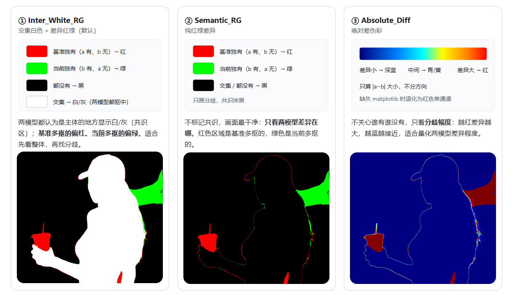

非常柠檬节点
一套面向普通用户的完整节点指南：涵盖图片输入、模型与 LoRA、尺寸、采样、保存、分组开关、抠图、路由器、文本推理与列表工具等全部非常使用的节点。
节点通用操作
- F1 快捷键：5大常用节点快捷入口。
- F2 快捷键：对所选的节点进行对齐排列(会员功能)。
- 单击 Gorup 组标题：Gorup组启停切换 。
- Shift + 单击 Gorup 组标题：Solo独占启用该Gorup组(会员功能) 。
- 双击节点标题：打开节点属性面板。
- 多行文本框联动：为减少节点占用的空间位置，两个以上相邻的多行文本框以弹性高度的方式联动。
- 外挂节点任意接入：为减少工作流的搭建复杂度，功能补全分组内的节点可以就近连入任意节点的空置接入口，即可生效。
全屏浏览（💠）
进入全屏后，一张图自动拆成左右两个视图：左侧是总览视图（整图缩放在框内，看全貌），右侧是细节视图（1:1 原像素，看细节颗粒）；总览图上的红色取景框就是细节图当前的查看区域——拖动或拉伸取景框，细节视图会同步跟随，所见即所得。(图片加载节点免费，图片生成对比全屏为会员)
功能亮点
- 全屏双图对比：A/B 双图并排对照，支持「滑动跟随」与「点击切换」两种对比方式，也能只看单图。
- 总览 ⇄ 细节联动：左边看全貌、右边看 1:1 原像素，红色取景框即细节图的「镜头」，指哪看哪。
- 自由缩放与平移：细节视图支持滚轮缩放（50% – 300%）、按住拖拽平移，一键回到 1:1 原像素。
- 五种对比模式：总览图+细节图都对比 / 仅总览对比 / 仅细节对比 / 仅覆盖层 / 都不对比。
- 覆盖层切换：A 图覆盖 ⇄ B 图覆盖，适合遮罩、蒙版类的前后效果对比。
- 多图翻页：多张结果时可左右翻页，A/B 两组图同步翻页对照。
- 布局自由调：左右面板位置可互换、总览视图可隐藏，中间分割线可拖拽调整宽度。
- 属性回写：在全屏里切换的对比方式与覆盖层选择，会自动同步回保存节点的对应属性，下次打开保持一致。
全屏快捷键
| 按键 |
功能 |
← / A |
上一页（A/B 同步） |
→ / D |
下一页 |
Space |
下一页（已是最后一页时退出全屏） |
F |
细节视图回到 1:1 原像素大小 |
R |
左右互换（总览 / 细节位置对调） |
E |
总览视图显示 / 隐藏 |
M |
循环切换五种对比模式 |
1 – 5（含小键盘） |
直达对应对比模式 |
V |
切换覆盖层（A ⇄ B） |
C |
切换对比方式（滑动跟随 ⇄ 点击切换） |
Esc/ 鼠标右键 |
退出全屏 |
单图加载器
所属分组：非常节点，免费节点。
加载一张图片并转成可用的图像数据：自动转正拍照方向、支持多帧动图、兼容 16 位灰度与透明通道，可选按数值对齐尺寸。
节点亮点
- 拍照方向自动转正：EXIF 方向信息自动校正，手机竖拍图不再躺倒。
- 多帧与灰度兼容：动图逐帧读取；16 位 / 32 位灰度图自动归一化为标准 8 位灰度。
- 透明通道保留：带透明信息的图片按 RGBA 处理，透明区域不丢失。
- 尺寸对齐：
size_align 可把输出尺寸对齐到指定数值，方便后续节点拼接。
- 图片列表追加：把本次加载结果追加到输入的
image_list 末尾，逐张累积。
怎么接线
| 输入 |
处理 |
输出 |
img 图片文件（下拉选择 / 点击预览区上传） |
加载图片并自动处理（EXIF 转正、灰度归一化、通道归一） |
image 处理后的图片 |
image 可选，外部图像输入 |
多帧逐帧读取，尺寸不一致的帧自动跳过 |
image_list 追加后的图片列表 |
image_list 可选，已有图片列表 |
按 size_align 对齐尺寸 |
|
参数设置
| 参数名 |
中文名 |
类型 |
默认值 |
怎么用 |
img |
图片文件 |
文件 |
/ |
选择要加载的图片；/ 为占位（配合外部 image 输入使用） |
size_align |
尺寸对齐值 |
INT |
16 |
输出尺寸对齐值，范围 0 ~ 128、步进 8；0 为关闭对齐 |
单图加载器(裁切缩放)
所属分组：非常节点，付费节点。
在节点画布上直接拖拽裁切框，所见即所得地完成图片加载、裁切、旋转与缩放，并支持批量列表与蒙版同步处理。
节点亮点
- 画布内直接裁切：8 个手柄拖拽缩放、框内拖动定位，带三分构图参考线，调整效果即时可见，不需要手写坐标。
- 旋转 + 背景填充：绕裁切框中心自由旋转，按住 Shift 可 45° 吸附；框外露出的区域自动用填充色补边。
- 四种缩放模式：按百万像素、倍率、长边、短边缩放，输出尺寸自动对齐常用像素值。
- 批量与蒙版同步：支持图片列表批量处理，mask 与图片执行同一套裁切、旋转与缩放。
- 快捷操作全套：快捷键、右键菜单、裁切模板导入导出、30 步撤销重做，图片 EXIF 方向自动转正。
怎么接线
| 输入 |
处理 |
输出 |
img 图片文件（点空白处、拖入或粘贴加载） |
加载图片（EXIF 自动转正） |
image 处理后的图片 |
image 可选，外部图像输入 |
按画布裁切框设定裁切 |
image_list 处理后的图片列表 |
image_list 可选，批量列表 |
旋转并填充框外区域 |
mask 处理后的蒙版 |
mask 可选，蒙版输入 |
按所选模式缩放输出 |
|
参数设置
常用参数就这几个，其余（裁切坐标、填充色、是否应用裁切）由画布操作自动管理：
| 参数名 |
中文名 |
类型 |
默认值 |
怎么用 |
aspect_ratio |
宽高比约束 |
COMBO |
🔓 |
宽高比约束：🔓 自由 / 🔒 锁定原图比例 / 🧪 自定义；或选预设 1:1、1:2、2:3、3:4、9:16、9:21、9:19.5、10:16 |
scale_mode |
缩放方式 |
INT |
0 |
缩放方式：0 关 / 1 百万像素 / 2 倍率 / 3 长边像素 / 4 短边像素（点图标循环切换） |
scale_value |
放大目标值 |
FLOAT |
1.0 |
缩放目标值（0.01 ~ 6400），配合上面的缩放方式使用 |
crop_type |
裁切框适配方式 |
COMBO |
relative_edge |
换图后裁切框的适配方式：relative_edge 边距比例 / relative_center 中心锁定 / absolute_px 固定像素 |
resample |
重采样算法 |
COMBO |
lanczos |
缩放重采样算法：lanczos / bilinear / bicubic / nearest-exact / area，一般保持默认 |
auto_save |
自动保存格式 |
COMBO |
none |
自动保存处理结果：none / png / jpg / webp |
画布操作
| 操作 |
效果 |
| 点击空白处 / 快捷键 O / 拖入 / 粘贴 |
加载图片 |
| 拖动裁切框 8 个白色手柄 |
缩放裁切框 |
| 拖动裁切框内部 |
移动裁切框位置 |
| 拖动四角 / 四边外侧的旋转热点 |
绕框中心旋转；按住 Shift 45° 吸附 |
| 拖拽时按住 Shift / Alt |
按比例缩放或轴向锁定 / 以框中心为锚点 |
| 点击右上角 Cutting 标签 |
切换「应用裁切」与「仅预览」 |
| 点击缩放图标 / 取色器 / 比例交换图标 |
切换缩放模式 / 选填充色 / 交换宽高比 |
快捷键与右键菜单
| 按键 |
功能 |
O |
加载图片 |
X |
交换宽高比 |
C |
重置裁剪 |
F |
全屏浏览图片 |
Ctrl+Z / Ctrl+Shift+Z |
撤销 / 重做（30 步历史） |
6 / 7 / 8 |
填充色红绿蓝切换 / 填充色撤销 / 重做 |
在图像区域右键可弹出菜单：撤销、重做、重置、交换比例、自定义宽高比、颜色切换、加载图片、全屏浏览、导入 / 导出裁切模板。
使用提示
- 固定像素模式下，图片小于裁切框时会自动跳过裁切、仅保留旋转。
- 旋转后框外露出的区域是填充色（不透明底）；需要透明底时，可结合输出的 mask 处理。
- 批量列表内各图分辨率可能不同，需要拼接成一张图时请自行对齐尺寸。
- 同一批图片保持尺寸一致时，裁切方式用默认的边距比例即可。
单图加载器(遮罩绘制)
所属分组：非常节点，付费节点。
加载一张图片并直接在节点内手绘遮罩：画笔、擦除、填充随手涂，遮罩以矢量动作记录（可无损撤销、导入导出），并可与原图透明通道合并、外扩后输出，适合局部重绘 / Outpainting / 抠图等场景。
节点亮点
- 所见即所得手绘：画笔、擦除、洪水填充直接在节点画布上操作，笔刷大小、透明度、边缘羽化实时可调，圆形光标预览笔触。
- 遮罩是矢量不是位图：涂抹记录为矢量操作栈，30 步撤销 / 重做无损可逆，工作流保存后重开也能恢复。
- 智能合并原图 Alpha：自动读取源图透明通道，可与手绘遮罩取并集（
merge_alpha）或完全覆盖。
- 遮罩外扩：
mask_expand 按像素向外扩张遮罩，方便扩散（Inpaint/Expand）预留余量。
- 一键预览遮罩效果：
mask_overlay 用画笔颜色填充遮罩区域、其余保持原图，涂完即可预览合成效果。
- 遮罩随身走：可导出 / 导入遮罩元数据 JSON，换图换尺寸自动换算；开启
auto_save 后同一张图重开工作流自动恢复遮罩。
- 多输入优先：支持 image / image_list / mask 外部输入，源图优先级 批量任务 > image > image_list 首图 > 节点加载图像。
怎么接线
| 输入 |
处理 |
输出 |
img 节点加载图像（点击 / 拖入 / 粘贴 / O 键） |
加载源图，自动提取透明通道作初始遮罩 |
image 处理后的图片（遮罩叠加预览或原图） |
image 可选，外部图像输入 |
手绘 / 填充遮罩，可外扩 |
image_list 处理后的图片列表 |
image_list 可选，批量列表 |
外部 mask 接入时优先于手绘数据 |
mask 生成的遮罩 |
mask 可选，外部遮罩输入 |
按 merge_alpha 决定与源图 Alpha 并集 / 覆盖 |
|
同时接入 image + image_list 时，处理结果插入列表首位；仅接入 image_list 时替换首元素。
参数设置
多数参数已隐藏到属性面板，节点上只保留 img、mask_overlay、mask_expand 三个可见项。
| 参数名 |
中文名 |
类型 |
默认值 |
怎么用 |
mask_overlay（节点 / 属性） |
遮罩叠加预览 |
COMBO |
rgb_original |
遮罩叠加预览：rgb_overlay 遮罩区域填充画笔颜色；rgb_original 原图直出；rgba_standard 输出原图+遮罩合成的标准 RGBA（4通道） |
mask_expand（节点） |
遮罩外扩像素 |
INT |
0 |
遮罩外扩像素（0 ~ 100），向外扩张遮罩边缘 |
merge_alpha（属性） |
遮罩合并方式 |
BOOLEAN |
False |
遮罩合并：开 = 手绘遮罩与原图透明通道取并集；关 = 手绘遮罩完全取代原图 Alpha |
resize_mode（属性） |
尺寸适配方式 |
COMBO |
fit_long_side |
外部 mask 尺寸适配：no_scalc 居中裁 / 填 / fit_short_side 短边等比缩放居中补 0 / fit_long_side 长边等比缩放居中裁剪 |
size_align（属性） |
尺寸对齐值 |
COMBO |
16 |
输出尺寸对齐：0 / 4 / 8 / 16 / 32 / 64 / 128 |
brush_color（属性） |
画笔颜色 |
STRING |
blue |
画笔颜色；设为 同步选色（SyncColor）时跟随画布当前取色 |
auto_save（属性） |
自动保存格式 |
BOOLEAN |
False |
自动保存遮罩元数据到 input 目录（图片名_mask.json），重新加载同一张图时自动恢复 |
绘制操作
工具栏
| 控件 |
功能 |
画笔 / 擦除 / 填充 |
三种工具：画笔描边、擦除（还原）、填充（点击区域洪水填充） |
清空 / 撤销 / 重做 |
清空全部遮罩、撤销 / 重做（30 步历史） |
BS 滑块 |
笔刷大小（1 ~ 300） |
OP 滑块 |
笔刷透明度（1 ~ 100） |
FT 滑块 |
边缘羽化（0 ~ 100） |
CL 取色器 |
画笔颜色 |
👁️ / 🙈 / 🧻 图标 |
按住显示 / 隐藏遮罩（无遮罩时显示为 🧻） |
📂 / 💠 / ↙️ / ↗️ 图标 |
加载图片 / 全屏浏览 / 导入遮罩元数据 / 导出遮罩元数据 |
画布操作
| 操作 |
效果 |
| 点击占位图 / 拖入图片 / 粘贴 |
加载图片（占位图点击弹文件选择器） |
| 在画布上拖动 |
画笔 / 擦除描边（需先激活工具） |
| 点击画布 |
填充（填充工具） |
| 滚轮 |
笔刷大小 ±5 |
| Ctrl + 滚轮 |
透明度 ±5 |
| Alt + 滚轮 |
羽化 ±5 |
快捷键
| 按键 |
功能 |
O |
加载图片 |
X |
画笔 ↔ 擦除 切换 |
C |
切换到填充工具 |
F |
全屏浏览图片 |
`（反引号） |
按住显示 / 隐藏遮罩（松开还原） |
Ctrl+Z / Ctrl+Shift+Z |
撤销 / 重做（30 步） |
[ / ] |
笔刷大小 -5 / +5 |
- / = |
羽化 -5 / +5 |
9 / 0 |
透明度 -5 / +5 |
3 |
笔刷大小档位循环（10 → 100 → 200） |
4 |
透明度 50 ↔ 100 |
5 |
羽化 0 ↔ 25 |
6 |
画笔颜色循环（红 → 绿 → 蓝 → 黑 → 白 → 灰） |
7 / 8 |
画笔颜色撤销 / 重做 |
遮罩的存取
| 方式 |
说明 |
| 矢量持久化 |
涂抹记录为矢量动作随工作流保存，重开工作流自动恢复（无需位图） |
| 导出 / 导入元数据 |
JSON 文件含源图、画布尺寸与全部动作；导入时若尺寸不同，按 resize_mode 自动换算坐标 |
| 自动保存 / 载入 |
auto_save 开启后，提交时自动保存为 图片名_mask.json 到 input 目录；同一图片再次加载时自动恢复 |
| 删除遮罩文件 |
右键「从 input 删除遮罩文件」，删除后画布涂抹同步清空 |
使用提示
- 外部接入
mask 端口时，优先使用外部遮罩，手绘涂抹数据（mask_data）会被忽略；此时 merge_alpha 仍决定它与原图 Alpha 的并集 / 覆盖关系。
mask_overlay 只是预览合成效果，输出 image 默认即叠加后画面；需要原始画面时关闭 mask_overlay。- 遮罩输出为全零（无任何遮罩）时会输出
None，后续节点需能接受空遮罩。
- 多帧动图（GIF / WebP / MPO）逐帧读取并各自提取 Alpha，MPO 只取首帧。
多图加载器
所属分组：非常节点，免费节点。
画廊式加载多张图片：有主图模式最多 5 张（1 张主图 + 4 张副图），无主图模式最多 6 张。支持副图缩放、合并为拼接图，并选择导出其中任意一张。
节点亮点
- 画廊即看：节点内直接预览全部图片，每格标注真实分辨率，加载失败会显示
missing。
- 拖拽排序：图片可拖拽重排——拖到格子左/右 25% 边缘插入前后，拖到中央与目标格互换。
- 主图 / 无主图模式：右键菜单一键切换，主图模式第一格为主图、横跨两列。
- 副图合并：副图可缩放为正方形后拼成横向、竖向、两宫或三宫网格图。
- 多路输入：点按钮上传、拖入文件、剪贴板粘贴、双击替换、空白格插入都支持。
怎么接线
| 输入 |
处理 |
输出 |
img 首图文件 |
按画廊逐张加载（副图按 img_scalc_sub_px 缩放） |
image 导出选项指定的那张图 |
image 可选 |
副图按 img_merge_sub 合并或逐张保留 |
image_list 全部结果追加到输入列表末尾 |
image_list 可选 |
按 img_index_out 选择输出哪一张 |
|
参数设置
| 参数名 |
中文名 |
类型 |
默认值 |
怎么用 |
main_image |
主图模式 |
BOOLEAN |
True |
是否使用主图模式：开 = 1 主图 + 最多 4 副图；关 = 最多 6 张副图（右键菜单切换） |
img_scalc_sub_px |
副图缩放边长 |
COMBO |
768 |
副图缩放边长：pass_scalc 不缩放 / 512 / 768 / 1024 / 1440 |
img_merge_sub |
副图合并方式 |
COMBO |
pass |
副图合并方式：pass 逐张输出 / 横向 / 竖向 / 两宫 / 三宫 拼接 |
img_index_out |
导出项 |
COMBO |
/ |
输出哪一项：图1 / 图2… / 拼接图（随画廊内容自动更新选项） |
size_align |
尺寸对齐值 |
INT |
16 |
输出尺寸对齐值，范围 0 ~ 128、步进 8；0 为关闭 |
画廊操作
| 操作 |
效果 |
| 点「添加图片」 |
批量上传，满员后按钮自动禁用 |
| 单击格子 |
选中该图位（联动下方文件名） |
| 双击格子 |
打开文件选择器替换该图位 |
| 点击空白格 |
可一次多选插入多张图 |
| 拖拽格子到左右边缘 |
插入到目标图前 / 后 |
| 拖拽格子到中央 |
与目标格互换位置 |
| 直接拖入 / 粘贴图片 |
外部图片上传；满员时从选中槽位开始依次替换 |
| 点「视图」 |
切换 裁切铺满（cover）/ 等比留白（contain）预览 |
| 点「清空」 |
移除全部图片 |
柠檬图像尺寸
所属分组：非常节点，免费节点（尺寸收藏限存 3 条，Pro 用户不限量）。
选定「比例 + 总像素」或「长边 / 短边」，节点自动计算宽高并生成对应尺寸的空 Latent，直接接加载器 / 采样器即可出图。
节点亮点
- 比例 + 像素双锁定：改了宽自动算高（反之亦然），永远不破比例；也可切到「长边 / 短边」或自由输入。
- 智能对齐：宽高自动按
size_align（默认 16）对齐；单边超过 max_edge（默认 8192）或总像素超 max_megepixels（默认 8MP）会自动缩回并提示，限制可在系统设置调整。
- 横竖一键切换：构图切换按钮在竖屏 / 横屏间互换宽高，比例小于 1 自动判定竖屏、大于 1 判定横屏。
- 常用尺寸收藏：把当前比例 / 像素 / 尺寸一键收藏，按「尺寸 > / 长边 > / 短边 > / 像素 > / 比例 >」分类排序，选中即应用。
- 模型感知的 Latent：接入模型后按模型的下采样倍率与通道数生成 Latent（不接模型也能输出宽高与占位 Latent）。
怎么接线
| 输入 |
处理 |
输出 |
megapixel 总像素 + ratio 比例 |
按比例与像素计算宽高 |
latent / 空 Latent |
width / height / length（长边模式） |
按模型倍率生成空 Latent |
width / height 最终尺寸 |
size_type 降采样档位 |
接 model 时自动取模型倍率与通道数 |
|
model（可选） |
model 的接入可提升 latent 尺寸的命中率 |
|
prompt_prefix（可选） |
和 prompt 或 Prompt 进行拼接 |
|
prompt（可选） |
prompt 优先与 Prompt 文本框 |
|
参数设置
| 参数名 |
中文名 |
类型 |
默认值 |
怎么用 |
megapixel |
总像素档 |
COMBO |
0.8 |
总像素档：🔓 自由 / 🤙 长边 / 🤏 短边 / 🧪 自定义 MP / 0.25 ~ 6.0 档位 |
ratio |
混合比例 |
COMBO |
3:4 |
比例档：🔓 自由 / 🧪 自定义 / 1:1 1:2 2:3 3:4 9:16 9:21 9:19.5 10:16 |
width |
宽度 |
INT |
880 |
宽度（32 ~ 32768，自动对齐 16） |
height |
高度 |
INT |
1184 |
高度（同上） |
length |
目标边长 |
INT |
1184 |
长边 / 短边模式的目标边长（面板中隐藏） |
batch |
批量张数 |
INT |
1 |
批量张数（1 ~ 64） |
size_type |
Latent降采样 |
COMBO |
auto |
Latent 降采样：auto 按模型倍率，1/2/3/4 对应 32/16/8/4 倍 |
dir_xy |
构图方向 |
COMBO |
y(ver) |
构图方向：x(hor) 横屏 / y(ver) 竖屏（面板中隐藏） |
收藏与按钮
| 操作 |
功能 |
⭐当前比例 |
收藏当前比例（如 比例 > 3:4） |
⭐当前像素 |
收藏当前总像素（如 像素 > 1.0） |
⭐当前尺寸 |
收藏当前宽高（尺寸 > 880×1184）或长边 / 短边 |
📐比例优先 / 📏像素优先 |
手动改宽高时，优先联动比例还是像素（两锁同时开启时） |
| 「我的收藏」下拉 |
选中即应用收藏；行内 🗑️ 删除、↕️↔️ 切换构图 |
应用「尺寸 > W×H」收藏时会智能反推总像素与比例，误差 5% / 3% 内自动匹配到对应档位。
使用提示
- 节点默认总像素
0.8（🧪 自定义取消时的回退值），实际档位从 0.25 起，常用出图 1.0 ~ 2.0 MP 足够。
- 改了宽高总被拉回？检查
megapixel / ratio 是否处于锁定档位（非 🔓）；想自由输入请先切到 🔓。
柠檬加载器
所属分组：非常节点，免费节点（模型收藏限存 3 条，Pro 用户不限量）。
一个节点替代「模型 + CLIP + VAE + 正向提示词 + 空 Latent」整条链路：加载模型与文本编码器、挂载 LoRA、编码提示词、生成 Latent，并内置模型缓存（参数不变不重复加载）。
节点亮点
- 全家桶式加载：模型（UNet / checkpoint / GGUF）、CLIP、VAE、多组 LoRA 一次配齐，输出
model / positive / vae / latent / clip（负面提示词不再从加载器出，交给「柠檬采样器」自给）。
- 智能模型缓存：按模型、提示词、Latent 分别做指纹缓存，参数不变时直接命中，不重复加载与编码。
- 模型家族组织：
ckpt_family 按目录家族管理模型，支持「收藏」带参数预设的模型组合，下拉即加载。
- AuraFlow / 差分扩散：
aura_flow 开启 AuraFlow 采样位移；差分扩散（differential diffusion）按去噪进度自适应遮罩强度，配合内补使用。
- 编辑模式：配合参考图自动选择 千问（Qwen）视觉编码或 Krea2Edit 语义编码，适配图片编辑 / 重绘工作流。
- 局部重绘内建：接入
mask 自动注入噪声遮罩；配合「反向/零化/内补」控制节点可做图内补全。
- SeedVR2 支持：模型名含
seedvr2 时自动切换 SeedVR2 预处理与分块 VAE 编码（需 ComfyUI ≥ 0.28.0）。
怎么接线
| 输入 |
处理 |
输出 |
Prompt 正向提示词 |
加载模型 / CLIP / VAE，挂载 LoRA |
model 模型 |
ckpt_family / ckpt_name 模型选择 |
编码正向提示词为 Conditioning（负面交给采样器） |
positive |
clip_name / clip_type / vae_name |
按尺寸预设或输入图生成 Latent |
vae / latent |
lora_options / lora_data 多组 LoRA |
mask 接入时注入噪声遮罩 |
clip |
image / image_list / latent 可选 |
参考图模式下走 千问 / Krea2 编码 |
|
无图片与自定义 Latent 输入时，尺寸取自「柠檬图像尺寸」节点，未接入时默认 512×512。
加载器不再有 negative 输出口：负面条件全部由「柠檬采样器」按「外接条件 → 外挂控制节点 → 全局默认负面提示词 → 零化」的次序自己决定，加载器也不再为此多跑一次文本编码。
参数设置
| 参数名 |
中文名 |
类型 |
默认值 |
怎么用 |
Prompt |
正向提示词 |
STRING（多行） |
— |
正向提示词 |
ckpt_family |
模型家族 |
COMBO |
— |
模型家族：All / 目录家族 / 收藏项（收藏显示为 家族/模型名，选中即加载预设） |
ckpt_name |
模型文件 |
COMBO |
/ |
模型文件（支持 .safetensors / .gguf / .ckpt / .pt / .bin，显示为 .stsr） |
clip_name |
文本编码器文件 |
COMBO |
/ |
文本编码器文件 |
clip_type |
CLIP 类型 |
COMBO |
— |
CLIP 类型（stable_diffusion / sd3 / flux / krea2 等 30 余种） |
vae_name |
VAE 文件 |
COMBO |
/ |
VAE 文件（缺省时随模型自动带出） |
aura_flow |
AuraFlow 位移 |
FLOAT |
0 |
AuraFlow 采样位移（0 ~ 100，>0 启用） |
lora_options / lora_count |
LoRA 文件 / 数量 |
下拉 / INT |
/ / 0 |
LoRA 文件与挂载数量 |
lora_clip |
LoRA 注入方式 |
BOOLEAN |
False |
开 = LoRA 注入模型与 CLIP（控制语义与风格）；关 = 仅注入模型（控制构图与画风） |
lora_data |
LoRA 列表 |
自定义 |
[] |
多组 LoRA 列表：启用开关 / 选择 / 强度 |
按钮与快捷键
| 操作 |
功能 |
⭐收藏修改 |
把当前模型 + 参数（含下游采样器、尺寸设置）保存为收藏预设 |
🗑️取消收藏 |
移除当前收藏项 |
❌移除配置 |
彻底删除该模型的关联预设参数 |
🔄刷新列表 / 按 R |
重新扫描模型 / CLIP / VAE / LoRA 列表 |
使用提示
ckpt_family 收藏项显示为 家族/模型名，选中即自动应用该模型的全部预设参数；预设保存在 lemon-model.json。- LoRA 强度范围通常 0 ~ 1，超出范围的值（如 -1 ~ 2）可用于风格反相或加强。
- 模型名含
seedvr2 时会切换 SeedVR2 模式，此时必须接入参考图，提示词不参与 Conditioning 编码。
柠檬采样器
所属分组：非常节点，免费节点。
内置采样增强与分步预览的采样节点，与「柠檬加载器」搭配完成去噪出图；支持矩阵预览、FLS 采样增强与 SeedVR2 多轮放大。
节点亮点
- 采样一条龙：接上 模型 + 条件 + VAE + Latent 即可去噪出图，seed / steps / cfg / 采样器 / 调度器 / denoise 全部面板可调。
- 分步预览：额外输出
steps_chart（分步预览图）与 sigma_chart（σ 曲线图）两个端口，未接线时自动不生成，不浪费算力。
- 矩阵预览：配合「生图矩阵预览(采样器)」控制节点，可在一次运行里铺开行×列的多参数预览矩阵。
- FLS 采样增强：配合「FLS采样增强(采样器)」控制节点，一键套用 写实人物 / 动漫二次元 / 硬朗金属 等增强预设。
- SeedVR2 放大内建：接到 SeedVR2 加载链路后自动进入多轮放大模式，每轮以上一轮输出为输入继续处理。
- 负面条件自给：
negative 口可以留空，采样器按次序自己决定 —— ① 外挂「反向/零化/内补(加载器)」控制节点的 Negative（它开着 negative_zero_out 时表示明确不要负面，直接零化）；② 外接的非零负面条件；③ 全局设置「默认负面提示词」（借上游柠檬加载器的 CLIP 现编，带 (CLIP, 文本) 缓存）；④ 都没有 → 零化兜底。cfg = 1 时另由全局开关「cfg=1 自动零化」决定是清零还是完全沿用接入值。自造的负面会自动继承正向条件上的内补 concat_* 与视频 frame_rate，不会缺参数。
怎么接线
| 输入 |
处理 |
输出 |
model 模型（必接） |
按 steps / cfg / sampler / scheduler 去噪 |
images 出图 |
positive 条件（必接）+ negative（可留空，见上「负面条件自给」） |
生成分步预览图与 σ 曲线（端口未接线则跳过） |
steps_chart 分步预览图 |
vae（必接）+ latent（必接） |
SeedVR2 链路时多轮放大 + 颜色匹配 |
sigma_chart σ 曲线图 |
参数设置
| 参数名 |
中文名 |
类型 |
默认值 |
怎么用 |
seed |
随机种子 |
INT |
100 |
随机种子 |
steps |
去噪步数 |
INT |
4 |
去噪步数（1 ~ 10000） |
cfg |
CFG 引导比例 |
FLOAT |
1.0 |
CFG 引导比例（0 ~ 100） |
sampler_name |
采样算法 |
COMBO |
— |
采样算法 |
scheduler |
调度器 |
COMBO |
— |
调度器 |
decode_tiled |
分块解码 |
BOOLEAN |
False |
开 = 分块解码（省显存） |
denoise |
重绘幅度 |
FLOAT |
1.0 |
重绘幅度（0 ~ 1，<1 时保留原图结构） |
只接 steps_chart / sigma_chart 时，采样器自动生成对应的分步预览 / σ 曲线输出。
柠檬采样器(多阶段)
所属分组：非常节点，付费节点。
多阶段版本：把「加载器 + 采样器」合并为一个节点，采样完成后把 模型、条件、VAE、Latent、提示词 等中间结果一并输出，适合需要分段控制或二次加工的进阶工作流。
节点亮点
- 加载采样一体：模型 / CLIP / VAE / LoRA / 提示词编码 / 去噪一条龙，无需另接「柠檬加载器」。
- 中间结果全输出：出图之外同时带出
model / positive / negative / vae / latent / prompt，可直接接二次采样或编辑节点。
- 多阶段步数编排：配合「步数控制(多阶采样器)」控制节点，可自定义本阶段在整条链路上的开始 / 结束步数。
- 局部重绘内建：接入
mask 自动注入噪声遮罩；image 与 image_list 同时接入时 image 成为图 1。
- 用完可卸载：
unload_models 开 = 生成完成后自动释放显存（Soft Empty Cache）。
怎么接线
| 输入 |
处理 |
输出 |
Prompt 提示词（必填） |
加载模型 / CLIP / VAE + 挂载 LoRA |
images 出图 |
model / positive / negative / vae（可选，连线优先） |
编码条件 → 按步数区间去噪 |
model / positive / negative / vae 中间结果 |
latent（可选） |
mask 接入时局部重绘 |
latent / prompt 中间结果 |
image / image_list / prompt_prefix（可选） |
多阶段编排时按 Step 控制节点取步数区间 |
steps_chart / sigma_chart 预览 |
参数设置
| 参数名 |
中文名 |
类型 |
默认值 |
怎么用 |
Prompt |
正向提示词 |
STRING（多行） |
— |
正向提示词 |
Negative |
负面提示词 |
STRING（多行） |
空 |
负面提示词（未接 negative 且 cfg≠1 时自动使用） |
seed |
随机种子 |
INT |
100 |
随机种子 |
steps |
去噪步数 |
INT |
4 |
本阶段去噪步数 |
cfg |
CFG 引导比例 |
FLOAT |
1.0 |
CFG 引导比例 |
sampler_name / scheduler |
采样算法 / 调度器 |
COMBO |
— |
采样算法 / 调度器 |
ckpt_family / ckpt_name / clip_name / vae_name / clip_type / clip_name2 |
模型家族 / 模型文件 / 文本编码器 / VAE / CLIP类型 / 第二编码器 |
COMBO |
/ |
模型 / CLIP / VAE 选择（同「柠檬加载器」） |
edit_type |
编辑编码方式 |
COMBO |
auto |
图片编辑编码（auto / qwen_edit / qwen21_edit / krea2_edit） |
aura_flow |
AuraFlow 位移 |
FLOAT |
0 |
AuraFlow 采样位移 |
lora_options / lora_count / lora_data / lora_clip |
LoRA 文件 / 数量 / 列表 / 注入方式 |
— |
— |
LoRA 挂载（同「柠檬加载器」） |
unload_models |
生成后卸载 |
BOOLEAN |
False |
生成完成后自动释放显存 |
柠檬图像保存
所属分组：非常节点，免费节点。
接收图像并保存到输出目录，同时在节点面板内直接预览；支持把生成参数 / 工作流写入文件元数据，方便回查。
节点亮点
- 内置 A/B 对比查看器：生成图（A 组）与参考图（B 组）可滑动卷帘对比 / 按住切换，支持九宫格多图预览与单图大图两种显示模式。
- 参数自动提取：自动收集模型、CLIP、VAE、LoRA、采样参数（seed/steps/cfg/sampler/denoise）、耗时与提示词，写入文件元数据，无需手动填。
- 多格式元数据：PNG 写入文本信息；JPG 写入注释；WebP 写入 EXIF——三种格式都能把参数带在文件里（含工作流 JSON）。
- 多种保存模式：
preview+save 预览并存盘 / preview_only 仅预览（临时目录）/ save_only 仅存盘不预览。
- 智能批处理：连续模式可保持原文件名与原目录结构保存、同名自动加
_1 _2 去重，跑完可自动关机。
- 保存前处理：可接「图像后期」控制节点做颜色校正（匹配参考图色调）与智能锐化。
怎么接线
| 输入 |
处理 |
输出 |
images 生成图（必接） |
按导出格式保存 + 写元数据 |
images 原样透传 |
images_b 参考图（可选，* 通配） |
颜色校正（配合后期控制）、输出 B 组对比图 |
|
flash_image 目标节点（可选） |
一键把当前图「闪送」到指定节点、或作 Flash 对比图 |
|
auto_path / author 保存设置 |
节点属性控制 格式 / 模式 / 命名 |
|
参数设置
| 参数名 |
中文名 |
类型 |
默认值 |
怎么用 |
images |
保存图像 |
IMAGE |
— |
要保存的图像 |
flash_image |
闪送目标节点 |
COMBO |
pass |
闪送 / 对比目标节点（#节点ID，行内 🚀 闪送、💠 全屏浏览、⚔️/🕊️ 对比开关） |
metadata_mode |
元数据内容 |
COMBO |
params + workflow |
元数据内容：pass / params / params + workflow / json / json + params / json + params + workflow |
images_b |
B组参考图 |
* |
— |
B 组参考图（IMAGE 或列表，用于对比与颜色校正） |
auto_path |
输出子目录 |
STRING |
日期 |
输出子目录：日期 自动替换为当天日期（如 20261006），可加子路径 |
author |
作者名 |
STRING |
空 |
作者名（写入元数据） |
节点属性（右键 Configure 面板）
| 属性 |
可选值 / 默认 |
作用 |
node_mode |
preview+save / preview_only / save_only |
保存模式 |
export_format |
jpg / webp / png / jpg+png / jpg+webp / png+webp / png+webp+jpg |
导出格式（可多选） |
name_prefix |
空 |
文件名前缀（支持 日期 占位） |
jpg_bg_color |
white |
JPG 合成透明区域时的背景色 |
display_mode |
grid（九宫格）/ gallery（标签页） |
面板显示方式 |
comparer_mode |
slide（滑动跟随）/ click（按住切换） |
A/B 对比方式 |
compare_cover |
a_cover / b_cover |
对比时哪张作前景覆盖层 |
pages_xy / overview_side / leave_buffer |
— |
大图页码位置 / 缩略图侧 / 鼠标甩出缓冲 |
操作与快捷键
| 按键 / 操作 |
功能 |
X |
切换显示模式：九宫格 ⇄ 单图大图 |
C |
切换对比方式：滑动跟随 ⇄ 点击切换 |
V |
切换对比覆盖层：A 图覆盖 ⇄ B 图覆盖 |
B |
一键开关 A/B 图片对比（关 = 仅显示 A 组） |
← / → |
A 组上一张 / 下一张 |
🖼️打开图片 |
系统打开当前图 |
📋复制图片 |
复制到剪贴板 |
📁打开目录 |
打开输出目录 |
💠全屏浏览 |
全屏查看（A/B 可对比） |
| 🚀 闪送 |
把当前图发送到 flash_image 选中节点（可弹窗改名） |
使用提示
- 节点面板本身就是图库：九宫格点缩略图进大图，底部页码可点；大图区域左半区上一张、右半区下一张，
Shift 点击可切 B 组。
- 想让生成图自动「闪送」回加载器继续迭代：
flash_image 选目标节点，点 🚀 即可投送（默认会弹窗询问新文件名，可在系统设置关闭）。
- 元数据默认含工作流 JSON（PNG 的 itxt / JPG 的自定义块 / WebP 的 WFLW chunk），拖回 ComfyUI 可还原流程；只想留参数可把
metadata_mode 改为 params。
- 连续批量模式保存时会沿用原文件名与目录结构（同名自动
_1 递增），无需担心覆盖；循环结束可自动关机（默认 60 秒延迟，可在弹窗取消）。
柠檬忽略多框
所属分组：非常工具，付费节点。
一个分组批量控制面板：不连线、不写节点，在面板里点一下就能把整组节点一键启用 / 忽略（Bypass），并支持分组跳转、独占聚焦、快捷键定位和批量配套建节点。
节点亮点
- F1 唤回本体：无论画布滚到哪里，按 F1 一键把面板唤回眼前（支持"跳转视口 / 移动节点"两种模式）。
- 整组一键启停：每一行对应一个分组，点左侧圆点即可整组启用 / 忽略，状态实时刷新（全开 / 全关 / 部分开启一目了然）。
- 独占聚焦（Solo）：点行内文字或右侧箭头，点亮该组、其余组全部忽略，配合跳转直达，专注当前任务。
- 分组跳转：点击行尾箭头，视口跳到分组位置，面板自动跟随到分组左上角。
- 数字键全局定位：给分组绑定 1-9 任意数字，画布内随时按数字直达，不打断操作流。
- 组标题栏点击切换：直接点画布里的分组标题条，也能整组启停；按住 Shift 点击 = 独占该组。
- 硬停用保护：手动 Ctrl+B/M 停用的节点一律不碰（整套面板动不了它们），可一键「复位硬锁」恢复管理。
- 配套节点一键创建：面板上直接创建 尺寸 / 选图 / 模型 / 采样 / 存图 等配套节点。
面板行内操作
| 区域 |
操作 |
| 左侧圆点 |
切换整组启用 / 忽略（全开 → 全关 → 再点全开） |
| 行首最左 |
设置别名标签（输入 00 清除） |
| 行内文字 |
独占（Solo）：点亮本组，其余组全部忽略（被锁定的组除外） |
| 右侧数字区 |
绑定 1-9 全局定位快捷键（输入 00 清除） |
| 右侧小方块 |
锁定 / 解锁该组（锁定后批量操作会跳过它） |
| 行尾箭头 |
独占该组并跳转到分组位置，面板跟随移动 |
列表支持按 显示名称 / 分组名称 / 节点数量 / 坐标 排序，并可按别名或分组名过滤。
参数设置
| 参数名 |
中文名 |
类型 |
默认值 |
怎么用 |
sort_by |
排序方式 |
COMBO |
显示名称 |
分组列表排序：显示名称 / 分组名称 / 数量递增递减 / 按 X、Y 顶点（均含倒序） |
filter |
关键字过滤 |
STRING |
空 |
分组关键字过滤 |
filter_range（属性） |
过滤范围 |
COMBO |
alias+group |
过滤范围：alias 只按别名 / group 只按分组名 / alias+group 别名或分组名 / alias>group 别名优先 |
display_alias（属性） |
显示格式 |
COMBO |
alias(group) |
显示格式：只显示别名，或 别名 (分组名) |
hotkey_mode（属性） |
F1 唤回方式 |
COMBO |
move |
F1 唤回方式：jump 视口跳转 / move 移动面板节点 |
jump_offset（属性） |
跳转偏移量 |
INT |
52 |
分组跳转时视口横向偏移量（-2000 ~ 2000） |
column_gap / row_gap（属性） |
列距 / 行距 |
INT |
16 / 24 |
布局间距 |
底部按钮
| 按钮 |
功能 |
📐尺寸 / 🖼️选图 / ⚙️模型 / 🎛️采样 / 💾存图 |
在画布上自动创建对应配套节点 |
🧊虚拟分组 |
输入节点 ID 创建虚拟分组（支持 2/5/8 或 2,5,8） |
💤忽略所有 |
全部未锁定分组一键忽略（Bypass） |
⚡开启所有 |
全部未锁定分组一键开启 |
🔓复位硬锁 |
把 Ctrl+B/M 手动硬停用的节点复位为可管理状态 |
全局快捷键
| 按键 |
功能 |
F1 |
唤回面板：jump 模式 = 视口跳回节点所在位置；move 模式 = 面板移到屏幕中央（3 秒内重复按回到上一次位置） |
1 ~ 9 |
跳转到绑定了该数字的分组 / 虚拟分组 |
分组标题栏（画布内）
| 操作 |
功能 |
| 单击分组标题条 |
整组启用 / 忽略（同面板圆点） |
| Shift + 单击标题条 |
独占该组（含嵌套子组），其余组全部忽略 |
概念速查
| 概念 |
说明 |
| 普通分组 |
画布上的分组框（可嵌套），行内显示组名与节点数 |
| 虚拟分组 |
用节点 ID 临时归组的集合，不依赖画布分组框，可跨位置归组 |
| 未分组（Ungrouped） |
画布上不属于任何分组的节点，固定在列表顶部 |
| 硬停用锁 |
用户手动 Ctrl+B/M 停用的节点，整套面板不触碰，需「复位硬锁」后恢复管理 |
| 安全锁（safe） |
行内小方块锁定，锁定组在 忽略所有 / 开启所有 / 独占 时被跳过 |
柠檬随机种子
所属分组：非常工具，付费节点。
输出一个种子整数；点击状态按钮可在四种模式间循环，还可锚定常用种子、一键回到上一个值。
节点亮点
- 四态循环：
🔒固定 → 🍀随机 → ➕递增 → ➖递减，点第一个按钮循环切换，当前状态直接显示在按钮上。
- 随机 / 步进自动化：随机每次运行时重新生成；递增每次 +1、递减每次 -1，到边界自动回绕，适合批量扫参。
- 锚点回位：
⚓ 按钮显示锚定种子值，点击立即恢复该值，反复调试同一画面很方便。
- 🧷上个：一键换回上一次的种子值（与当前值互换），对比前后两张图。
- 🎲换个：手动随机换一个，不改变当前状态模式。
- 上限可调：
max_seed 属性设置随机范围上限（默认 1 亿，0 = 不设上限）；数值与状态模式都会随工作流一起保存。
参数设置
| 参数名 |
中文名 |
类型 |
默认值 |
怎么用 |
seed |
随机种子 |
INT |
100 |
当前种子值（1 ~ 上限，可手动改） |
max_seed（属性） |
随机上限 |
number |
100000000 |
随机 / 递增 / 递减的范围上限（0 = 不设上限） |
anchor_seed（属性） |
锚点种子 |
number |
100 |
锚点种子值（⚓ 按钮恢复的目标值） |
操作与状态
| 按钮 |
功能 |
🔒固定 / 🍀随机 / ➕递增 / ➖递减 |
状态模式循环切换（第一个按钮） |
🎲换个 |
立即随机换一个种子 |
🧷上个 |
回到上一个种子值 |
⚓N |
恢复到锚点种子 N |
状态说明：固定 = 保持当前值不变；随机 = 每次运行时重新随机；递增 / 递减 = 每次运行时 +1 / -1（超出上限回绕）。
一键广播（📡）
标题栏右上角的 📡 图标可以让整个工作流共享本节点的种子值：
| 操作 |
效果 |
| 点击标题栏 📡 图标 |
开启 / 关闭广播（未开启时图标半透明，开启后点亮） |
| 开启广播后 |
工作流内所有带 seed / noise_seed 控件的节点统一使用本节点当前种子，无需逐节点接线 |
| 接收标记 |
有 seed 控件的节点在控件旁显示 🟢；未连线的 seed 输入口显示 🟡 |
| 删除本节点 |
广播自动关闭 |
适用场景：多个采样器 / 加载器共用一个种子做批量复现；配合 🍀随机 模式可一次随机同步所有节点。广播在提交运行时生效，接收节点原有的 seed 控件值不再单独起作用。
使用提示
- 种子状态会随工作流 JSON 保存，重开工作流后模式与数值都在；想固定复现同一张图，把状态切到
🔒固定 即可。
🍀随机 的真正随机发生在执行前，连点运行每次都是新种子；配合 🧷上个 可来回对比。- 给批量扫参场景建议：随机配合
max_seed 限定范围，递增 / 递减适合按步长穷举。
LoRA 分组
分组速览
LoRA 工具分为两个节点：柠檬LoRA加载器 负责把多组 LoRA 挂载到已加载的模型上（每组独立 启用 / 模型 / 强度，可选 CLIP 注入，输出挂载摘要）；柠檬LoRA管理器 负责 LoRA 素材库的管理（触发词、强度上下限、默认强度），两者配合使用。
柠檬LoRA加载器
所属分组：非常工具，付费节点。
在已加载的模型上挂载多组 LoRA，输出挂载结果摘要字符串。
节点亮点
- 多组叠加：列表式管理多组 LoRA，每组独立 启用 / 模型 / 强度。
- CLIP 可选：不接 CLIP 时仅注入模型；接入后模型与 CLIP 同时注入（语义与风格）。
- 结果可读：
result 端口输出实际加载摘要（如「真正加载了多组 Lora: 【模型: xxx, 强度: 1.00】」）。
怎么接线
| 输入 |
处理 |
输出 |
model 模型（必接） |
逐组挂载启用的 LoRA |
model 挂载后的模型 |
clip 可选，接入后 CLIP 参与注入 |
按强度叠加模型 / CLIP 权重 |
clip 挂载后的 CLIP |
lora_options / lora_count / lora_data |
|
result 加载摘要文本 |
参数设置
| 参数名 |
中文名 |
类型 |
默认值 |
怎么用 |
lora_options |
LoRA 文件 |
COMBO |
lora_select |
LoRA 文件（显示为 .stsr） |
lora_count |
LoRA 数量 |
INT |
1 |
LoRA 数量（0 ~ 100） |
lora_data |
LoRA 列表 |
自定义 |
[{"enabled": true, "lora": "lora_select", "strength": 1.0}] |
多组 LoRA 列表 |
柠檬LoRA管理器
所属分组：非常工具，付费节点。
LoRA 参数旁挂管理：把「触发词 + 强度范围 + 默认强度」写入 LoRA 文件名标签或同名 txt / json 旁挂文件，选中即自动带回参数，方便参数随模型走。
节点亮点
- 参数自动加载：选中 LoRA 时按「文件名
[参数] 标签 → 同名 txt 第一行 → 同名 json」顺序自动读取参数。
- 参数标签规范：文件名可带
[触发词#最小-最大-默认强度]，如 [0.9]、[0-1-0.9]、[prompt#0-1-0.9]。
- 旁挂文件：txt 保存只更新第一行（保留后续备注）；json 只更新参数字段（保留其他内容）。
- 安全重命名：只重命名模型文件与预览图，txt / json 旁挂文件不受影响（参数存在内容里）。
怎么接线
| 输入 |
处理 |
输出 |
ckpt_family 家族 |
读取 / 更新 LoRA 参数旁挂文件 |
status 状态文本（如 OK: lora名） |
lora_name 选择 LoRA |
参数自动加载到下方输入框 |
|
trigger_prompt / min_val / max_val / strength |
一键写入文件名或旁挂文件 |
|
参数设置
| 参数名 |
中文名 |
类型 |
默认值 |
怎么用 |
ckpt_family |
模型家族 |
COMBO |
All |
LoRA 家族（loras 目录的一级子目录）过滤 |
lora_name |
LoRA 名称 |
COMBO |
/ |
选择 LoRA（选中自动加载其旁挂参数） |
trigger_prompt |
触发词 |
STRING |
空 |
触发词（写入参数标签 触发词#…） |
min_val |
强度下限 |
FLOAT |
0 |
强度范围下限（-10 ~ 10） |
max_val |
强度上限 |
FLOAT |
0 |
强度范围上限（-10 ~ 100） |
strength |
默认强度 |
FLOAT |
0 |
默认强度（-10 ~ 100） |
按钮
| 操作 |
功能 |
✏️更新文件名 |
把当前参数写入文件名 [参数] 标签；已带标签则去除标签 |
📄保存TXT |
生成 / 更新同名 txt 旁挂文件（只改第一行） |
📄保存JSON |
生成 / 更新同名 json 旁挂文件（只更新参数字段） |
🔄刷新列表 |
重新扫描 LoRA 列表 |
柠檬箭头标签
所属分组：非常工具，免费节点。
在工作流画布上放置一段纯前端浮动文本，用于注释、说明与分组标记；不参与任何计算，保存 / 加载不丢失。
节点亮点
- 零侵入：节点本身透明、无标题栏、不参与计算，只是画布上的一行文字。
- 可带方向箭头：支持 8 个方向（上 / 下 / 左 / 右 / 四角），作注释标注或流程指向。
- 样式自由：字号、颜色、背景、内边距、圆角、旋转角度、字体、对齐方式均可调，自动按文字量调整节点尺寸。
- 固定穿透：右键「固定 (Pin)」后标签固定在画布上，鼠标点击可穿透到下方节点（双击仍可编辑）。
- 便捷编辑：双击打开属性面板，文本框
Enter 提交、Shift+Enter 换行，数值属性 ↑/↓ 微调（Shift ×10 步长）。
参数设置（双击节点打开属性面板）
| 属性 |
默认值 |
怎么用 |
textShow |
🍋柠檬箭头标签 |
显示文本（支持多行，\n 换行） |
fontSize |
12 |
字号（≥1） |
fontFamily |
Arial |
字体 |
fontColor |
#ffffff |
文字颜色 |
textAlign |
left |
对齐：left / center / right |
backgroundColor |
transparent |
背景色（transparent = 无背景） |
padding |
0 |
内边距 |
borderRadius |
0 |
背景圆角 |
arrowDirection |
none |
箭头方向：none / up / down / left / right / 四角 |
arrowColor |
fontColor |
箭头颜色（默认跟随文字色） |
angle |
0 |
整块旋转角度 |
颜色支持多种写法：#fff / #ffffff88（hex）、red / blue（颜色名）、rgb() / rgba()、逗号分隔 255,0,0。
使用提示
- 标签节点固定后鼠标穿透，误触不到下方节点；要改文字随时双击打开面板。
- 颜色值支持多种写法，填颜色名（如
red）比记十六进制更省事。
工作流提取
所属分组：非常工具，免费节点。
读取图片内嵌的生成元数据并输出为字符串：包括文件信息、生成参数与提示词，方便溯源复现。兼容 PNG、JPG/JPEG、WebP。
节点亮点
- 一站式溯源：一张图就能拿到它背后的参数、提示词与工作流信息。
- 多格式兼容：PNG 读 params / workflow / prompt 块；JPG、WebP 读注释与压缩的 JSON 元数据。
- 提示词智能提取：优先沿 KSampler → positive → CLIPTextEncode 连接链定位正向提示词，失败时再全量扫描并过滤负面词。
- 文件信息自动附带：输出内容含文件名、大小、尺寸、修改时间；非本插件生成的图片会如实注明。
怎么接线
| 输入 |
处理 |
输出 |
img 图片文件 |
读取内嵌元数据并解析 |
image_list 图片列表 |
image_list 可选 |
输出提取到的参数文本 |
image 图片 |
|
|
params 文件信息 + 生成参数 |
|
|
prompt 提取到的提示词 |
参数设置
| 参数名 |
中文名 |
类型 |
默认值 |
怎么用 |
img |
图片文件 |
文件 |
/ |
选择要提取元数据的图片 |
size_align |
尺寸对齐值 |
INT |
16 |
输出尺寸对齐值，范围 0 ~ 128、步进 8；0 为关闭 |
插件还提供「复制提示词」「保存参数为 txt」「保存工作流为 json」等动作（保存到 output/meta/ 目录），具体入口以实际界面为准。
节点路由器分组
分组速览
路由器家族负责画布上的「多路切换」：A(上游总控) 把一路输入分发到多个下游，B(下游汇总) 把多路输入汇聚成一路，C(上游分发) 按编号把上游多路分发下去，D(下游总控) 汇总多路后输出。切换路由时未选中的链路会被强制静音（省算力），支持子图穿透；输入口自动紧凑，最多 24 路。
节点路由器A(上游总控)
所属分组：非常工具，付费节点。
节点亮点
- 一键切换链路：
route 选几路，输入就发往第几路；未选中的路下游节点自动静音（强制 Mute），运行只走选中链路。
- 输出口自动紧凑：只保留「有连接的口 + 1 个备用口」，画布不堆 24 个空口；最多 24 路。
- 自动配对：新建时自动在右侧生成配套的路由器B。
怎么接线
| 输入 |
处理 |
输出 |
input 万能输入（可选） |
按 route 数值转发 |
route_1 ~ route_24（未选中口输出空） |
参数设置
| 参数名 |
中文名 |
类型 |
默认值 |
怎么用 |
route |
路由编号 |
INT |
1 |
选中的路由编号（上限 = 实际输出口数，最多 24） |
节点路由器B(下游汇总)
所属分组：非常工具，付费节点。
多路输入汇聚成一路：按 route_N 编号从小到大，取第一个有有效数据的口输出。 ｜ - 输入口自动紧凑（保留有连接的口 + 1 备用口，最多 24 路）。 ｜ - 典型用法：与路由器A配对做「多路输出再汇总」，或手工把多来源接到不同口取优先级。
节点路由器C(上游分发)
所属分组：非常工具，付费节点。
1 进 1 出透传（input → output），作为反向链路的「上游标记点」；新建时自动在右侧生成配套的路由器D。用于把「结果回送 / 反向数据流」的组织结构标出来。
节点路由器D(下游总控)
所属分组：非常工具，付费节点。
节点亮点
- 反向总控：多个输入口各接一路来源，
route 选几路就只透传第几路的输入。
- 自动静音未选链路：切换
route 时反向追踪，选中路的上游全部激活，其它路上游强制静音，避免多余计算。
怎么接线
| 输入 |
处理 |
输出 |
route_1 ~ route_N（万能输入） |
按 route 只透传选中口 |
output 选中的输入 |
参数设置
| 参数名 |
中文名 |
类型 |
默认值 |
怎么用 |
route |
路由编号 |
INT |
1 |
选中的路由编号（上限 = 实际输入口数） |
使用提示（路由器家族通用）
- 路由器切换后未选中的链路会被强制静音（节点名变灰），这不是故障，是省算力的设计；切回即恢复。
- 路由器A/B/C/D 支持放进子图（Subgraph）：链路追踪会穿透子图内部，子图内节点同样参与静音联动。
功能补全分组
控制节点怎么用
「功能补全」分组的节点统称控制节点：它们不直接产生图像，而是把参数「注入」到同一条工作流里的目标节点（加载器 / 采样器 / 保存器），用于补充目标节点面板上不常用的参数。
- 输出端无需连线：控制节点的输出口一般不用接线——同一条工作流内会自动找到目标节点并应用参数；如果直接连线，则优先使用连线的那个控制节点。
- 同类多个取一：同一片工作流里放了多个同类控制节点时，只取节点编号最大的那个生效。
- 停用即失效：把控制节点 Mute / Bypass 后，它的参数不再注入目标节点。
多图批量任务(图片加载器)
所属分组：功能补全，付费节点。
批量跑图控制节点：指定一个目录，按轮次把目录里的图片逐张送进工作流（配合加载器节点），支持文件名过滤、子目录遍历、大图压缩与自动关机。
节点亮点
- 目录批量跑图：自动扫描目录内图片并按文件名排序，一轮轮逐张处理。
- 文件名过滤：只处理包含指定词的文件；词前加
! 则排除包含该词的文件。
- 大图压缩：超过指定百万像素的图片自动等比缩小，原图自动备份（前缀 / 后缀可切换）。
- 轮次与断点：可设置连续批量轮次与起始索引，配合
original_name 保持原文件名和目录结构。
- 可自动关机：全部跑完后自动关机（可选）。
怎么接线
| 输入 |
处理 |
输出 |
folder_path 目录路径 |
扫描目录（可选含子目录），过滤、排序 |
loop_control 批量控制信号（需连接到工作流，未连线会提示跳过） |
loop_count / start_index 轮次控制 |
逐张送入当前图片路径，可压缩大图 |
|
auto_shutdown |
完成后自动关机 |
|
参数设置
| 参数名 |
中文名 |
类型 |
默认值 |
怎么用 |
folder_path |
批量目录 |
STRING |
空 |
要批处理的图片目录 |
filter_name |
文件名过滤 |
STRING |
空 |
文件名过滤：包含该词才处理；! 开头 = 排除包含该词的文件 |
loop_count |
批量轮次 |
INT |
1 |
批量轮次，1 ~ 999999 |
start_index |
起始索引 |
INT |
1 |
起始索引（从第几张开始） |
compress_mp |
大图压缩上限 |
FLOAT |
1 |
大图压缩上限（百万像素，0 = 关闭）；超出自动缩放并备份原图 |
backup_pos |
备份命名方式 |
BOOLEAN |
False |
备份文件名方式：prefix 前缀 / suffix 后缀 |
sub_folder |
子目录遍历 |
BOOLEAN |
False |
是否遍历扫描子目录 |
original_name |
原文件名保存 |
BOOLEAN |
False |
按原文件名且保持目录结构（否则自动规则命名） |
auto_shutdown |
自动关机 |
BOOLEAN |
False |
跑完后自动关机 |
注意：必须得搭配 🍋柠檬图片加载器、🍋柠檬图像保存 节点才可以完成批量任务！
支持的文件格式：png / jpg / jpeg / webp / bmp / tiff；自动跳过 _orig 备份文件。
反向/零化/内补(加载器)
所属分组：功能补全，付费节点。
「柠檬加载器」的配套控制节点：负责第二 CLIP、量化、提示词零化与内补设置，输出端无需连线，参数自动注入加载器。负面一路现归「柠檬采样器」读取：与本节点同孤岛、或直接连到采样器都算数。
参数设置
| 参数名 |
中文名 |
类型 |
默认值 |
怎么用 |
Negative |
负面提示词 |
STRING（多行） |
worst quality, low quality, bad anatomy, blurry, watermark, jpeg artifact |
负面提示词，由「柠檬采样器」在 cfg ≠ 1 时读取：写了文本且未开零化 → 用它现编负面条件（压过全局「默认负面提示词」）；写了文本且开了零化 → 视为明确不要负面；留空 → 交给全局默认词 |
clip_name2 |
第二文本编码器 |
COMBO |
/ |
第二文本编码器（接入双 CLIP 场景） |
clip_type |
CLIP 类型 |
COMBO |
/ |
CLIP 类型（简化列表：sdxl / sd3 / flux / hunyuan_video / ltxv 等） |
edit_type |
编辑编码方式 |
COMBO |
auto |
图片编辑编码：auto 自动按模型选择 / qwen_edit / qwen21_edit（千问视觉）/ krea2_edit（Krea2Edit） |
quant_dtype |
量化精度 |
COMBO |
default |
模型量化精度：default / fp8_e4m3fn / fp8_e4m3fn_fast / fp8_e5m2 |
negative_zero_out |
提示词零化 |
BOOLEAN |
True |
开 = 负面提示词归零（即便 Negative 里写了文本）；关 = 采样器用 Negative 文本现编一份负面条件 |
mask_noise |
遮罩噪声 |
BOOLEAN |
True |
内补时对遮罩区域注入噪声 |
differential_diffusion |
差分扩散 |
BOOLEAN |
True |
差分扩散：按去噪进度自适应遮罩强度 |
image_inpaint / mask_inpaint |
内补图像 / 遮罩 |
IMAGE / MASK |
— |
可选，图内补全的图像与遮罩（传递到加载器） |
Image2.1选项(加载器)
所属分组：功能补全，付费节点。
「柠檬加载器」的配套控制节点：为 Qwen-Image-2.1 模型设置 KV 缓存的位置与精度，输出端无需连线。
参数设置
| 参数名 |
中文名 |
类型 |
默认值 |
怎么用 |
cache_device |
KV缓存位置 |
COMBO |
auto |
KV 缓存存放位置：auto 显存优先 / gpu 显存 / cpu 省显存 / off 关闭缓存 |
cache_dtype |
KV缓存精度 |
COMBO |
default |
KV 缓存存储精度：default / int8 体积减半 / int4 体积减到 1/4 |
Krea2Edit(加载器)
所属分组：功能补全，免费节点。
「柠檬加载器」的配套控制节点：为 Krea2Edit 语义编码提供参考图保真度、增强区域与系统提示词设置，输出端无需连线。
参数设置
| 参数名 |
中文名 |
类型 |
默认值 |
怎么用 |
krea2_type |
编辑类型 |
BOOLEAN |
krea2_edit |
krea2_edit 和 krea2_ostris 编辑模式切换 |
ref_boost_mask |
增强区域遮罩 |
MASK |
— |
krea2_edit生效:（最后一张）参考图上的可选增强区域，例如人脸；留空 = 整张参考图 |
system_prompt |
系统提示词 |
STRING（多行） |
空 |
krea2_edit生效: 高级选项：覆盖关联系统提示词（留空 = 训练默认值），引导视觉编码器关注的内容（如人脸身份细节） |
ref_boost |
参考图保真度 |
FLOAT |
4.0 |
krea2_edit生效: 参考图保真度：1.0 = 关闭；>1 更强地拉向参考图外观，<1 放松（作用于最后一张参考图 / 单参考图工作流中的唯一参考图） |
ref_boost_a |
首图保真度 |
FLOAT |
1.0 |
krea2_edit生效: 第一张参考图的保真度旋钮（双参考图工作流中为场景图；单参考图工作流无效），1.0 = 关闭 |
grounding_px |
视觉编码最长边 |
INT |
768 |
krea2_edit生效: 送入 Qwen3-VL 的最长边限制（0 = 原生尺寸） |
fit_mode |
源图适配方式 |
COMBO |
fit |
krea2_edit生效: 源图适配方式：fit 重采样到目标网格居中偏移（匹配训练方式，建议使用）/ crop (legacy) 中心裁剪后缩放（旧权重用） |
model_patch |
编辑类型 |
BOOLEAN |
False |
krea2_ostris生效: 模拟 Krea2OstrisEditModelPatch 节点是否接入工作流。 |
kv_cache |
编辑类型 |
BOOLEAN |
False |
krea2_ostris 和 model_patch= Ture 时生效: 预计算参考 token 的注意力 K/V 并在每个去噪步骤复用 |
model_patch = 模拟「Krea2OstrisEditModelPatch 节点是否接入工作流」：
- 开 = 接入：无条件 t=0 参考注入（ostring 官方节点行为），
kv_cache 仅控制是否预计算参考 K/V 缓存（OminiControl2 式省算力）。
该 t=0 注入范式需要 ai-toolkit 按 index_timestep_zero 训练的 Krea2 edit LoRA；无配套 LoRA 时画面会异常（脏/噪点），属官方依赖缺失的正常表现，非节点缺陷；
- 关（默认）= 不接入：纯 Qwen3-VL 看图编码（此时可以洗图生图）。
SeedVR2放大(加载器)
所属分组：功能补全，付费节点。
「柠檬加载器」的配套控制节点：设置 SeedVR2 放大的倍率方式、多轮循环、颜色匹配与分块参数，输出端无需连线。
参数设置
| 参数名 |
中文名 |
类型 |
默认值 |
怎么用 |
scale_mode |
缩放方式 |
COMBO |
by_multiplier |
放大方式：by_multiplier 倍率 / by_megapixel 目标像素 / by_longer 长边 / by_shorter 短边 |
scale_value |
放大目标值 |
FLOAT |
2.0 |
放大目标值（0.3 ~ 8192） |
loop |
放大轮数 |
INT |
1 |
多轮放大轮数：每轮以上一轮输出为输入继续处理（倍率模式下效果最明显） |
resample |
重采样算法 |
COMBO |
lanczos |
中间重采样算法 |
color_correction_method |
颜色匹配方式 |
COMBO |
adain |
生成图颜色匹配到原图的方法：adain 还原度较高（多轮放大必须选它）/ lab 匹配后对比度增加 / wavelet 对比度与亮度增加 / none 跳过 |
tile_size（高级） |
分块边长 |
INT |
512 |
分块边长 |
overlap（高级） |
分块重叠 |
INT |
64 |
分块重叠 |
temporal_size（高级） |
视频单次编码帧数 |
INT |
64 |
视频 VAE 单次编码帧数 |
temporal_overlap（高级） |
视频帧重叠 |
INT |
8 |
视频 VAE 帧重叠数 |
auto_save |
自动保存格式 |
COMBO |
webp |
每轮放大图自动保存：none / png / jpg / webp |
步数控制(多阶采样器)
所属分组：功能补全，付费节点。
「柠檬采样器(多阶段)」的配套控制节点：自定义本阶段在整个多阶段链路中的开始 / 结束步数，输出端无需连线。
参数设置
| 参数名 |
中文名 |
类型 |
默认值 |
怎么用 |
start_step |
开始步数 |
INT |
0 |
自定义开始步数（0 ~ 10000） |
end_step |
结束步数 |
INT |
20 |
自定义结束步数（0 ~ 10000） |
未接步数控制节点时，多阶段采样器按「上游各阶段步数之和」自动推算本阶段步数区间；接入后以自定义区间为准。
批量快速抽卡(采样器)
所属分组：功能补全，付费节点。
「柠檬采样器」的配套控制节点：把一次采样展开成 行×列 的预览矩阵，适合批量对比参数效果，输出端无需连线。
参数设置
| 参数名 |
中文名 |
类型 |
默认值 |
怎么用 |
step |
预览步数 |
INT |
2 |
取到第几步的 latent 做快速预览图 |
rows |
矩阵行数 |
INT |
1 |
预览矩阵行数（1 ~ 64） |
columns |
矩阵列数 |
INT |
1 |
预览矩阵列数（1 ~ 64） |
size_max |
预览图长边 |
INT |
2048 |
每张预览图的长边像素，拼接前按此等比缩放；0 = 使用完整出图尺寸不缩放 |
行数 × 列数 > 1 时，采样器改为输出矩阵预览图（steps_chart 口），适合扫参看趋势。
FLS采样增强(采样器)
所属分组：功能补全，免费节点。
「柠檬采样器」的配套控制节点：一键套用 FLS 采样增强预设（写实人物 / 动漫二次元 / 硬朗金属），或自定义中央凹强化、锐度与遮罩惯性，输出端无需连线。
参数设置
| 参数名 |
中文名 |
类型 |
默认值 |
怎么用 |
FLS |
FLS 预设 |
COMBO |
fls_pass |
预设：fls_pass 关闭 / 自定义参数 / 写实人物 / 动漫二次元 / 硬朗金属 |
fovea_strength |
中央凹强化 |
FLOAT |
0.0 |
中央凹强化强度（0 ~ 10，滑块） |
sharpness |
锐度 |
FLOAT |
0.0 |
锐度（0 ~ 3，滑块） |
mask_inertia |
遮罩惯性 |
FLOAT |
0.85 |
遮罩惯性（0 ~ 0.99，滑块） |
未接控制节点时采样器使用默认值 fls_pass / 0 / 0 / 0.85。
精确裁切控制(裁切器)
所属分组：功能补全，付费节点。
用数值精确控制裁切（四边扩 / 裁量 + 旋转角度），与「单图加载器(裁切缩放)」的画布拖拽双向联动；输出端无需连线，参数自动传递到裁切节点。
参数设置
| 参数 |
范围 |
说明 |
src_img_width / height |
-8192 ~ 8192 |
源图尺寸，为 0 时按实际图片尺寸 |
top / right / bottom / left |
-8192 ~ 8192 |
四边扩（正） / 裁（负）量 |
rot_deg |
-360 ~ 360 |
旋转角度（度） |
图像后期(图像保存)
所属分组：功能补全，免费节点。
「柠檬图像保存」的配套控制节点：输出端无需连线，参数自动注入保存节点，在存盘前完成颜色校正与锐化。
怎么接线
| 输入 |
处理 |
输出 |
color_match 校正方式 |
保存前按参考图（images_b 首张）做颜色匹配 |
image_edit_control（参数注入保存节点） |
smart_sharpen 智能锐化 |
双边滤波去噪 + 锐化按比例混合 |
|
| 各强度参数 |
仅在接入 images_b / 开启锐化时生效 |
|
参数设置
| 参数名 |
中文名 |
类型 |
默认值 |
怎么用 |
color_match |
颜色校正 |
COMBO |
adain |
颜色校正：adain 匹配通道均值/标准差（最接近原图）/ lab CIELAB 传色 / wavelet 低频传色 / none 不校正（需接入 images_b） |
smart_sharpen |
智能锐化 |
BOOLEAN |
False |
是否启用智能锐化 |
noise_radius |
去噪半径 |
INT |
7 |
去噪半径（1 ~ 25） |
preserve_edges |
边缘保留度 |
FLOAT |
0.75 |
边缘保留度（0 ~ 1） |
sharpen |
锐化强度 |
FLOAT |
5.0 |
锐化强度（0 ~ 25） |
ratio |
混合比例 |
FLOAT |
0.5 |
锐化与去噪的混合比例（0 ~ 1） |
文本推理分组
分组速览
文本推理共有 7 个变体，按接入方式与深度区分：TASK 最常用（内置专家 + 双框高度模式），LLM 面向通用大模型，CLIP 轻量文本编码，RAW 暴露原始模型参数，HTTP 外接远程服务，高级参数 开放上下文 / 缓存 / 投机解码等底层选项，专家管理 用于自定义专家配置。内置 12 种专家：翻译、提示词扩写、图像编辑扩写、看图编辑扩写（图片）、图像反推、OCR、OCR 图表、摘要、关键词提取、JSON 提取、文字润色、语法纠错。
文本推理(TASK)
所属分组：文本工具，付费节点。
专家任务一键执行：翻译 / 看图编辑扩写等任务由「系统提示词模板」驱动，节点标题栏点击即可切换专家，执行结果自动回填输出框。
节点亮点
- 标题栏切换专家：点击节点标题栏左侧弹出专家列表（🖼️ 图片专家 / 🍋 文本专家），选中即切换任务并联动显隐相关输入框。
- 所见即所得：执行结果自动回填
text_out，可直接手动编辑。
- 语言专家：
target_lang 指定目标语言（auto = 中→英，非中→中）；语言专家才显示语言选项。
- 配置可扩展：官方模板只读，你的增删改存用户目录，升级不丢失（增删改在「文本推理(专家管理)」节点）。
参数设置
| 参数名 |
中文名 |
类型 |
默认值 |
怎么用 |
task |
任务类型 |
下拉（前端隐藏） |
配置第一个专家 |
任务类型（面板上通过标题栏菜单切换） |
model_main |
主模型 |
COMBO |
/ |
主模型（models/LLM/） |
model_mmproj |
多模态投影模型 |
COMBO |
/ |
图片任务需选对应 mmproj；纯文本留 / |
target_lang |
目标语言 |
COMBO |
auto |
目标语言（auto / 中文 / English / 日本語 / 한국어 / Français / Deutsch / Español / Русский） |
text_in |
输入文本 |
STRING（多行） |
空 |
文本任务填输入文本；图片任务填编辑意图 |
text_out |
输出文本 |
STRING（多行） |
空 |
推理结果（前端自动回填，也可手动编辑） |
box_mode |
双框高度模式 |
COMBO |
flex_bottom |
双框高度模式（等高均分 / 自由弹性 / 上占满 / 下占满等 7 种） |
max_edge |
图片长边上限 |
INT |
1024 |
图片长边上限（0 = 不压缩） |
seed |
随机种子 |
INT |
100 |
随机种子 |
内置专家类型
全部专家配置在 llm_task_config.json 中（唯一来源，随节点包提供）：
| 专家 |
类型 |
语言选项 |
用途 |
| 翻译 |
文本 |
✅ |
逐词直译到目标语言（默认中英互译），保留 Markdown 格式与排版 |
| 提示词扩写 |
文本 |
✅ |
把简短提示词扩写为结构化完整提示词（含构图/光影/材质/风格等） |
| 图像编辑扩写 |
文本 |
✅ |
把简短编辑指令扩写为可执行编辑描述（动作/对象/效果/保留项） |
| 看图编辑扩写 |
图片 |
✅ |
观察图片后结合编辑意图，扩写为贴合原图基调的编辑描述 |
| 图像反推 |
图片 |
✅ |
详细描述图片内容：主体、场景、动作、颜色、文字、风格 |
| OCR |
图片 |
— |
逐行提取图中文字，保留原始排版，不翻译不改写 |
| OCR图表 |
图片 |
— |
提取图表数据，输出 Markdown 表格 |
| 摘要 |
文本 |
— |
中文要点概括（3-5 条），保留关键结论与数据 |
| 关键词提取 |
文本 |
— |
提取 5-10 个关键词 / 标签（逗号分隔） |
| JSON提取 |
文本 |
— |
按指定字段提取结构化信息，输出严格 JSON |
| 文字润色 |
文本 |
— |
修正语病与啰嗦，保持原意与风格 |
| 语法纠错 |
文本 |
— |
英文语法 / 拼写 / 标点纠错，只输出修正后文本 |
图片专家需选 model_mmproj 并接入 image 输入；带语言选项的专家会显示目标语言下拉框。可自行增删改（见「文本推理(专家管理)」节点）。
文本推理(LLM)
所属分组：文本工具，免费节点。
主力本地推理节点：llama.cpp 内核加载 GGUF 模型（models/LLM/），支持图片 / 多图 / 视频 / 音频多模态输入。
节点亮点
- 多模态输入：
image 单图、image_list 多图、audio 音频，自动识别模式。
- 视频抽帧：多帧 IMAGE 输入自动按视频处理，均匀抽取
max_frames 帧一次性分析；面板开 per_frame 则逐帧独立推理。
- 思考模式：
think_enable 开启模型思考链，输出拆分为 thinking（思考）+ report（正文）两个端口。
- 文本模式自动切换系统提示：无图无音频时自动换用文本专用系统提示词。
- Qwen3.8 采样自动覆盖：按思考开关自动套用官方推荐采样参数。
- 用完可卸载：
unload_model 开 = 运行后释放显存。
参数设置
| 参数名 |
中文名 |
类型 |
默认值 |
怎么用 |
model_main |
主模型 |
COMBO |
/ |
主模型（models/LLM/，分片只显示第一片） |
model_mmproj |
多模态投影模型 |
COMBO |
/ |
多模态投影模型（看图任务必选；纯文本留 /） |
prompt_system |
系统提示词 |
STRING（多行） |
图片系统提示 |
系统提示词 |
prompt_user |
用户提示词 |
STRING（多行） |
图片问答提示 |
用户提示词 |
think_enable |
思考链开关 |
BOOLEAN |
False |
开启模型思考链 |
max_tokens |
最大生成长度 |
INT |
1024 |
最大生成长度（20 ~ 8192） |
max_edge |
图片长边上限 |
INT |
1024 |
图片长边上限，超出等比缩放；0 = 不压缩 |
max_frames |
视频抽帧数 |
INT |
24 |
视频抽帧数（2 ~ 1024） |
temperature / top_p / top_k |
温度 / 核采样 / Top-K |
FLOAT/INT |
0.7 / 默认 / 默认 |
采样参数 |
unload_model |
运行后卸载 |
BOOLEAN |
False |
运行后卸载模型释放显存 |
seed |
随机种子 |
INT |
100 |
随机种子 |
文本推理(CLIP)
所属分组：文本工具，免费节点。
走 ComfyUI 原生 CLIP 文本生成内核（models/text_encoders/），与系统 Load CLIP 同一目录。
参数设置
| 参数名 |
中文名 |
类型 |
默认值 |
怎么用 |
clip_name |
文本编码器文件 |
COMBO |
/ |
文本编码器模型（models/text_encoders/） |
clip_type |
CLIP 类型 |
COMBO |
qwen_image |
模型类型（qwen_image=Qwen3.5/3.6 VL；joyimage=Qwen3-VL 8B 等） |
device |
运行设备 |
COMBO |
default |
运行设备（default / cpu） |
prompt_system / prompt_user |
系统提示词 / 用户提示词 |
STRING |
空 |
系统提示非空时覆盖预设；用户提示必填 |
think_enable |
思考链开关 |
BOOLEAN |
False |
支持思考模式的模型开启思考 |
max_tokens |
最大生成长度 |
INT |
1024 |
最大生成长度（1 ~ 32768） |
use_default_template |
默认对话模板 |
BOOLEAN |
True |
使用模型自带系统提示 / 对话模板 |
temperature / top_p / top_k |
温度 / 核采样 / Top-K |
FLOAT/INT |
0.7 / 默认 / 默认 |
采样参数（do_sample、MTP 投机解码由高级参数面板下发） |
seed |
随机种子 |
INT |
100 |
随机种子 |
文本推理(RAW)
所属分组：文本工具，免费节点。
transformers 直载 safetensors 权重推理（HF 模型目录放 models/LLM/，含 config.json + 权重），与 GGUF 内核互不干扰，两套缓存独立。
参数设置
| 参数名 |
中文名 |
类型 |
默认值 |
怎么用 |
model_main |
主模型 |
COMBO |
— |
HF 模型目录（models/LLM/） |
quantization |
量化档位 |
COMBO |
None (FP16) |
量化档位：None (FP16) / 4-bit / 8-bit（FP8 预量化模型自动识别并忽略此选项） |
attention_impl |
注意力实现 |
COMBO |
flash_attention_2 |
注意力实现：flash-attn 最快（需已安装）/ sdpa PyTorch 原生 / eager 关闭加速（不可用时自动回退） |
prompt_system / prompt_user |
系统提示词 / 用户提示词 |
STRING |
图片预设 |
系统 / 用户提示词 |
think_enable |
思考链开关 |
BOOLEAN |
False |
Qwen3 系思考模式（非 Qwen3 模型自动忽略） |
max_tokens |
最大生成长度 |
INT |
1024 |
最大生成长度（20 ~ 8192） |
max_edge / max_frames |
图片长边上限 / 视频抽帧数 |
INT |
1024 / 24 |
图片压缩上限 / 视频抽帧数 |
temperature / top_p / top_k |
温度 / 核采样 / Top-K |
FLOAT/INT |
0.7 / 默认 / 默认 |
采样参数 |
unload_model |
运行后卸载 |
BOOLEAN |
False |
运行后卸载模型 |
seed |
随机种子 |
INT |
100 |
随机种子 |
4-bit / 8-bit 量化需要 bitsandbytes（CUDA 环境）；flash-attn 未安装时自动回退默认实现，无需手动改。
文本推理(HTTP)
所属分组：文本工具，免费节点。
不自带模型：连接已启动的 llama-server（OpenAI 兼容 /v1/chat/completions），适合模型在外部进程运行、或本节点只做调度的场景。
参数设置
| 参数名 |
中文名 |
类型 |
默认值 |
怎么用 |
base_url |
服务地址 |
STRING |
http://127.0.0.1:8085 |
llama-server 地址（不带末尾斜杠） |
prompt_system / prompt_user |
系统提示词 / 用户提示词 |
STRING |
空 |
系统 / 用户提示词 |
think_enable |
思考链开关 |
BOOLEAN |
False |
通过 enable_thinking 打开思考 |
max_tokens |
最大生成长度 |
INT |
1024 |
最大生成长度（1 ~ 32768） |
max_edge |
图片长边上限 |
INT |
1024 |
图片长边上限（0 = 不压缩） |
timeout |
请求超时 |
INT |
600 |
请求超时秒数（10 ~ 3600） |
temperature / top_p / top_k |
温度 / 核采样 / Top-K |
FLOAT/INT |
0.7 / 默认 / 默认 |
采样参数 |
seed |
随机种子 |
INT |
100 |
随机种子 |
使用前先手动启动服务：llama-server --model xxx.gguf --mmproj xxx-mmproj.gguf --port 8085。停止词在高级参数面板 stop 设置（逗号分隔）。
文本推理(高级参数)
所属分组：文本工具，免费节点。
推理节点的「底层配置面板」：输出端无需连线，参数自动下发到同工作流中的 LLM / CLIP / HTTP / TASK 节点。
参数设置
| 参数名 |
中文名 |
类型 |
默认值 |
怎么用 |
n_ctx |
上下文长度 |
INT |
默认 |
上下文长度（512 ~ 327680） |
n_batch |
批处理窗口 |
INT |
默认 |
prefill 批处理窗口（16 ~ 8192） |
flash_attn |
注意力加速 |
COMBO |
默认 |
不开启 = 保持 llama.cpp 默认；开启 / 关闭 = 指定 flash_attn 类型 |
GPU_layers |
GPU 层数 |
INT |
默认 |
-1 = 尽量上 GPU；0 = 纯 CPU；正数 = 指定层数 |
cache_type_k / cache_type_v |
K缓存 / V缓存 |
COMBO |
默认 |
KV 缓存类型 |
min_p / penalty_repeat / penalty_presence / penalty_frequency |
Min-P / 重复惩罚 / 存在惩罚 / 频率惩罚 |
FLOAT |
默认 |
采样与惩罚参数 |
do_sample |
采样开关 |
BOOLEAN |
True |
CLIP 节点采样开关（关闭 = 贪心解码） |
mtp |
投机解码 |
COMBO |
auto |
CLIP 节点多 token 预测投机解码（无 MTP 权重时无效） |
stop |
停止词 |
STRING |
空 |
HTTP 节点停止词（英文逗号分隔） |
reasoning_budget |
思考预算 |
INT |
默认 |
Gemma4 思考预算（-1 = 不限） |
qwen38_reasoning_effort |
推理强度 |
COMBO |
default |
Qwen3.8 推理强度：xhigh 质量优先 / medium 均衡 / low 速度优先 |
qwen38_mtp_enable / qwen38_mtp_draft_tokens / qwen38_mtp_draft_model |
MTP 开关 / 草稿数 / 草稿模型 |
— |
关 / 默认 / / |
Qwen3.8 内置 NextN/MTP 投机解码（视觉模式自动关闭） |
think_history |
思考历史保留 |
BOOLEAN |
False |
Qwen3.5/3.6 保留历史轮次 <think> |
external_audio_path / external_image_path |
外部音频路径 / 图片路径 |
STRING |
空 |
外部音频 / 图片路径（本地路径、http URL 或 data URI；对应输入口优先） |
per_frame |
逐帧推理 |
BOOLEAN |
False |
多帧输入：开 = 逐帧独立推理；关 = 采样成视频一次性分析 |
treat_as_video |
视频序列编码 |
BOOLEAN |
False |
勾选后帧批次按视频序列编码（插入 <| video_pad| >） |
文本推理(专家管理)
所属分组：文本工具，付费节点。
任务专家的增删改查：下拉选中专家即回填表单（所见即所得），按钮栏一键新增 / 保存 / 删除；report 端口输出当前完整配置。
按钮与参数
| 按钮 |
功能 |
🌡️ 标准 / ❄️ 确定性 / 🔥 高随机 |
一键填入常用采样参数模板（创意 / OCR 提取翻译 / 发散） |
🧹 格式化 |
美化当前 llm_params JSON（非法时提示） |
🔄 刷新列表 |
重新读取专家配置并同步下拉 |
➕ 新增专家 |
弹窗输入英文专家 key，进入新增模式 |
💾 保存专家 |
新增模式 = 新增；下拉选中 = 修改（保存前自动校验 params） |
🗑️ 删除专家 |
删除当前选中的专家 |
| 参数名 |
中文名 |
类型 |
默认值 |
怎么用 |
task |
任务类型 |
COMBO |
第一个专家 |
切换即回填下方表单 |
task_name |
显示名称 |
STRING |
空 |
界面显示名（中文），留空用专家 key |
input_image |
图片专家 |
BOOLEAN |
False |
是否图片专家（需 mmproj + image 输入） |
more_lang |
语言专家 |
BOOLEAN |
False |
是否语言专家（显示目标语言选项） |
box_mode |
双框高度模式 |
COMBO |
full_both |
双框高度模式 |
task_prompt |
系统提示词 |
STRING（多行） |
空 |
系统提示词（必填） |
llm_params |
采样参数 JSON |
STRING（多行） |
空 |
采样参数 JSON 对象（非法标红；修改时留空保留原值） |
使用提示（文本推理系列通用）
- 四个推理节点怎么选：有 GGUF 用「文本推理(LLM)」（功能最全）；想用 ComfyUI 原生 CLIP 链路用「文本推理(CLIP)」；模型在外部 server 用「文本推理(HTTP)」；有 HF safetensors 目录用「文本推理(RAW)」。LLM 与 RAW 缓存相互独立，别同时挂两个大模型。
- 看图任务别忘 mmproj：LLM / TASK 节点接入图片时必须选
model_mmproj，否则报错；纯文本任务留 /。
- 系统提示词库：推理系列节点标题栏左侧点击弹出系统提示词库（选中即写入）；右键菜单可「添加到系统提示词库 / 保存到当前条目 / 删除当前条目」。
- 专家配置的存放：全部专家配置的唯一来源是
llm_task_config.json（官方文件只读、随包升级），你的改动存 llm_task_config_user.json；_ 开头的键是元信息，专家 key 不能用 _ 开头、不能以数字开头。
- 性能参考：
GPU_layers = -1 尽量上 GPU；KV 缓存类型与 flash_attn 影响显存与速度；n_ctx 越大显存占用越高。
提示词批量/多轮任务
所属分组：文本工具，付费节点。
把文本按分隔符切成多行并筛选。支持一次性列表输出，也支持每批单独生图、保存完成后自动处理下一批；支持结果回写与动态提示词语法。
节点亮点
- 整段 / 分切双模式：
line_task 开启 = 分切并筛选多行；关闭 = 整段不分切，跳过行筛选与短行过滤，直接输出单条提示词。
- 任意分切符：
line_split 可设任意字符（\n 换行、\t 制表符、\r 回车或自定义字符）。
- 行筛选：
line_case 支持单行 / 范围 / 混合，如 3、4-6、1-3,5,8-10（1 基索引，中英文逗号均可）。
- 短行忽略：
line_miss 忽略少于指定字符数的行。
- 外接文本拼接：
text_input 用分切符与主文本框拼接（不再是"替代"关系）。
- 结果回写：
back_write 开启时，执行后把筛选结果写回主文本框，并自动关闭开关。
- 列表 / 多轮模式：
loop_count=0 时把所有筛选结果一次性作为列表输出；loop_count=N 时将全部筛选结果完整生图 N 轮，每轮内部按 loop_batch 分批，当前批保存完成后自动继续下一批，整轮完成后再开始下一轮。
- 每批提示词数量：
loop_batch 默认 1，每批输出一行；设为 N 后每批输出最多 N 行，最后一批不足 N 行时按实际剩余数量输出。
- 保存后续批：多轮模式要求工作流启用「柠檬图像保存」节点。可点击节点上的“开始批量任务”，也可使用 ComfyUI 的 Queue Prompt / Ctrl+Enter 启动；按钮会在运行时切换为“停止批量任务”。停止请求会在当前批次结束后生效。
- 动态提示词：主文本框支持「动态提示词」语法。
- 参数联动：
line_task 关闭时自动隐藏分切相关参数；loop_count=0 时隐藏 loop_batch、auto_shutdown 和批量任务按钮。头 / 主 / 尾三框弹性布局。
怎么接线
| 输入 |
处理 |
输出 |
prompt_task 主文本框（+ text_input 外接可选） |
拼接 → 按 line_split 分切 → 去空行 / 短行过滤 → line_case 行筛选 |
prompts 提示词列表（每行一条） |
line_task 关闭 |
整段不分切，跳过全部预处理 |
单条提示词（头 + 整段 + 尾） |
loop_count=0 |
所有筛选结果一次性输出 |
完整提示词列表 |
loop_count=N |
完整执行全部筛选提示词 N 轮；每轮按 loop_batch 条输出，等待当前批保存完成后继续 |
当前批次提示词列表 |
prompt_head / prompt_end 前后缀 |
逐行拼接前后缀 |
|
参数设置
| 参数名 |
中文名 |
类型 |
默认值 |
怎么用 |
text_input |
外部文本 |
STRING |
— |
外接输入（可选），用分切符与主文本框拼接 |
line_task |
分切开关 |
BOOLEAN |
True |
开 = 文本分切成列表批量出图；关 = 整段不分切（跳过行筛选与短行过滤） |
line_split |
分切符号 |
STRING |
\n |
任意字符为分切符：\n 换行、\t 制表符、\r 回车 |
line_case |
行筛选 |
STRING |
空 |
单行 3；范围 4-6；混合 1-3,5,8-10（1 基索引，支持中英文逗号） |
line_miss |
忽略短行 |
INT |
0 |
少于多少字符的行忽略（0 = 不按长度过滤，仅去除空行） |
back_write |
结果回写 |
BOOLEAN |
False |
开启后执行结果回写主文本框，并自动关闭开关 |
prompt_head |
头部拼接 |
STRING（多行） |
空 |
每行输出的前缀 |
prompt_task |
批量文本 |
STRING（多行） |
空 |
主文本，支持「动态提示词」语法 |
prompt_end |
尾部拼接 |
STRING（多行） |
空 |
每行输出的后缀 |
loop_count |
列表/多轮次数 |
INT |
0 |
0 = 一次性列表输出；大于 0 = 完整执行全部筛选提示词指定轮数，例如 2 就生图两轮 |
loop_batch |
每轮并行提示词数 |
INT |
1 |
多轮模式每批输送的提示词数；1 为逐行，大于 1 为每批多行 |
auto_shutdown |
自动关机 |
BOOLEAN |
False |
当前 Prompt2List 多轮处理不使用此项；保留控件但不会因该选项自动关机 |
使用提示
- 普通列表模式输出所有筛选行；多轮模式要求启用「柠檬图像保存」节点，由保存节点完成后触发下一批。
line_case 存在无法解析或越界的片段时，会弹窗提示具体内容。- 多轮模式每批的提示词会分别拼接
prompt_head / prompt_end；back_write 会在最后一批完成时将全部选中行（不含前后缀）回写，并自动关闭开关。
- 多轮模式不能与图片批量任务（
LM_LoopLemonCtrl）同时启用。遇到错误时，已保存的批次会保留；可再次排队重试当前未完成批次。
提示词路由器
所属分组：文本工具，付费节点。
按 line_split 把多段候选文本分行，用 select_case 选中第 N 段，拼上头尾与外部输入，用于「多方案切换 / A-B 测试」式的工作流。
怎么接线
| 输入 |
处理 |
输出 |
prompt_case 多段文本（按 line_split 分隔） |
按 select_case 选中第 N 段 |
文本 最终提示词 |
prompt_head / prompt_end 头尾 |
头 + 选中段 + 尾拼接 |
|
text_input 外部输入（可选） |
拼在最终结果最前面 |
|
select_case 序号 |
remark_note 仅作面板备注 |
|
参数设置
| 参数名 |
中文名 |
类型 |
默认值 |
怎么用 |
select_case |
选中段号 |
INT |
1 |
选中第几段（1 基索引；0 = 输出空；超出可选范围会报错） |
line_split |
分切符号 |
STRING |
\n |
多段文本分隔符：\n 换行、\t 制表符、\r 回车；留空 = 整段 |
remark_note |
面板备注 |
STRING（多行） |
空 |
仅作备忘，不参与输出 |
prompt_head |
头部拼接 |
STRING（多行） |
空 |
选中段前拼接的头部 |
prompt_case |
候选文本 |
STRING（多行） |
空 |
候选文本，用 line_split 分隔多段；支持「动态提示词」语法 |
prompt_end |
尾部拼接 |
STRING（多行） |
空 |
选中段后拼接的尾部 |
text_input |
外部文本 |
STRING |
— |
外接输入（可选），拼在最终结果最前面 |
分隔符由 line_split 指定（默认换行），select_case 超出可选范围时会报错提示。
多视角分组
分组速览
多视角提示词围绕三个词槽生成带视角的提示词：环绕角度（ANGLE）、俯仰高度（HEIGHT）、景别（SHOT）。多视角提示词 输出单个提示词模板；多视角批量组合 按角度（8 档）× 高度（4 档）× 景别（3 档）勾选组合，一键批量生成多条视角提示词。
多视角提示词
所属分组：文本工具，免费节点。
从 8 种环绕角度、4 种俯仰高度、3 种景别中各选一项，生成一条规范视角提示词（适合人物 / 产品多视角出图）。
怎么接线
| 输入 |
处理 |
输出 |
Angle / Height / Shot 三选 |
拼接为「角度 高度 景别」 |
prompt 提示词 |
Prefix 前缀（默认 <sks>） |
前缀加在最前 |
|
参数设置
| 参数名 |
中文名 |
类型 |
默认值 |
怎么用 |
Angle |
环绕角度 |
COMBO |
front view |
环绕角度（front / left / right / back 等 8 种） |
Height |
俯仰高度 |
COMBO |
eye-level shot |
俯仰高度（平视 / 俯视 / 高角度 / 低角度 4 种） |
Shot |
景别 |
COMBO |
close up |
景别（特写 / 中景 / 全景） |
Prefix |
前置词 |
STRING（多行） |
<sks> |
前置词（如主体标识符） |
多视角批量组合
所属分组：文本工具，免费节点。
把「角度 × 高度 × 景别」勾选项做笛卡尔积，一次生成全部组合提示词（多行输出），省去手动排列。
节点亮点
- 勾选即组合：三个分组各勾选若干项，自动生成全部组合（如 3 角度 × 2 高度 × 2 景别 = 12 条）。
- 多行输出：组合结果以换行分隔，可直接接「批量提示词」展开批量出图。
- 未选组放行：某组全部不勾选时该维度视为任意（不参与组合，也不占位）。
参数设置
| 参数名 |
中文名 |
类型 |
默认值 |
怎么用 |
Prefix |
前置词 |
STRING |
<sks> |
组合前缀 |
ANGLE 分组标题 + 8 个角度 |
环绕角度勾选 |
BOOLEAN |
仅 front view 开 |
勾选要组合的环绕角度 |
HEIGHT 分组标题 + 4 个高度 |
俯仰高度勾选 |
BOOLEAN |
仅 eye-level shot 开 |
勾选要组合的俯仰高度 |
SHOT 分组标题 + 3 个景别 |
景别勾选 |
BOOLEAN |
仅 close up 开 |
勾选要组合的景别 |
每条输出格式为「前缀 角度 高度 景别」，角度 / 高度 / 景别中的下划线会转成空格。
抠图汇总&对比热力图
所属分组：图像工具，免费节点（热力图输出为付费功能）。
一个节点同时运行多套抠图算法（RMBG / BEN2 / InSPyReNet / SAM3 / BiRefNet / FeyNobg），汇总输出透明图、遮罩、热力图对比与性能报告，方便选型与批量出图。
节点亮点
- 一节点多算法：同时启用多套抠图模型，一次运行对比效果，不用来回切换。
- 测评热力图：指定一个基准算法，其它算法与其逐像素对比，输出红绿差异图（含 IoU / MAE / 冲突像素占比与两端耗时标注）。
- SAM3 语意抠图：输入英文物体词汇（如
person），按语意分割目标，支持透明物体。
- 前景精修：
refine_foreground 对边缘做去杂色处理，抠玻璃、水等透明物体时建议关闭。
- 结果可控：阈值二值化、遮罩羽化、反相、换背景色一气呵成。
- 性能报告：
Report 端口输出每个算法的加载 / 推理耗时，选型有依据。
怎么接线
| 输入 |
处理 |
输出 |
image 原图（必接） |
每个启用算法独立推理出遮罩 |
image 透明底 RGBA（多算法时按顺序堆叠） |
| 各算法开关 / 模型选择 |
阈值 / 羽化 / 前景精修 / 反相 |
mask 遮罩（与 Alpha 对应） |
SAM3 语意词 |
与基准算法逐像素对比 |
heatmap 差异热力图 |
heatmap_target 基准 |
汇总加载与推理耗时 |
report 性能文本 |
参数设置
| 参数名 |
中文名 |
类型 |
默认值 |
怎么用 |
image |
输入图像 |
IMAGE |
— |
输入图像 |
RMBG14 |
RMBG-1.4 开关 |
BOOLEAN |
True |
启用 RMBG-1.4 |
RMBG2 |
RMBG-2.0 开关 |
BOOLEAN |
— |
启用 RMBG-2.0 |
BEN2 |
BEN2 开关 |
BOOLEAN |
— |
启用 BEN2 |
InSPyReNet |
InSPyReNet 开关 |
BOOLEAN |
— |
启用 InSPyReNet |
BiRefNet_1/2/3 |
BiRefNet 模型位 |
COMBO |
/ |
三个 BiRefNet 模型位（background_removal 目录，可各选不同模型） |
FeyNobg |
FeyNobg 开关 |
BOOLEAN |
— |
启用 FeyNobg |
SAM3 |
语义抠图词 |
STRING |
person |
被抠物体的英文语意词（输入 / 关闭 SAM3，模型放 checkpoints 目录） |
compare_target |
测评基准 |
COMBO |
/ |
测评基准算法（选一个已启用的算法；/ = 不测评） |
heatmap_style |
热力图样式 |
COMBO |
Inter_White_RG |
热力图样式：交集白色 + 差异红绿 / 纯红绿差异 / 绝对差伪彩 |
background |
输出背景 |
STRING |
Alpha |
输出背景：Alpha 透明底，或填颜色（如 white、#ffffff）合成背景 |
device |
运行设备 |
COMBO |
auto |
运行设备：auto / GPU / CPU |
process_res |
推理分辨率 |
INT |
1024 |
推理分辨率（RMBG14 等使用，64 ~ 4096） |
threshold |
二值化阈值 |
FLOAT |
0.0 |
遮罩二值化阈值（0 ~ 1，0 = 不二值化） |
mask_blur |
遮罩羽化 |
FLOAT |
0.0 |
遮罩高斯羽化（0 ~ 64） |
refine_foreground |
前景精修 |
BOOLEAN |
True |
前景边缘去杂色（抠透明物体时建议关闭） |
invert_output |
遮罩反相 |
BOOLEAN |
False |
遮罩反相 |
热力图说明

使用提示
- 模型文件需要下载至 models \ RMBG 目录各自文件夹内。
- SAM3
sam3.1_multiplex_fp16.safetensors 放置在 checkpoints 目录 或 models \ RMBG \ SAM3 目录都可使用。
- 一次勾选多个算法时，
Alpha_image / Mask 会按启用顺序堆叠输出（每张原图对应 N 份结果），下游批量节点可直接消费。
- 想看两个算法差在哪：
heatmap_target 选基准，热力图红绿通道分别代表「本算法多抠 / 少抠」的区域，数值行给出 IoU（越接近 100% 越一致），看热力图更要注意边缘部分的差异。
- 抠透明物体（玻璃、水、纱）时关掉
refine_foreground，避免边缘被错误压暗。
- 使用 RMBG 请遵循它的 CC BY-NC 4.0 协议。
TTP 分组
分组速览
TTP 分块管线专为大图与低显存场景设计：TTP分割 把大图切成带坐标的分块，TTP合并 按坐标拼回并做融合渐变，TTP解码 直接在潜空间分块后经 VAE 输出图像列表。配合任意逐块处理节点使用。
TTP分割
所属分组：图像工具，免费节点。
把大图按「分块 → 逐块处理 → 渐变融合」切碎再拼回，解决超分、重绘等场景下大图爆显存的问题。
节点亮点
- 四种分块平衡方案：缩小均分均等 / 定长边缘均分 / 定长边缘余切 / 定长靠边回弹，适配不同放大需求。
- 重叠防接缝：
overlap 重叠区让相邻块的渐变融合有素材，拼回无接缝。
- 坐标对齐：
alignment 保证分块坐标对齐模型要求（默认 64）；scale 放大输出坐标，配合放大链路。
怎么接线
| 输入 |
处理 |
输出 |
image 大图 |
按 tile_edge 与 overlap 计算分块网格 |
image_tiles 分块列表（原图坐标裁剪） |
balance_type 平衡方案 |
输出放大后的分块坐标 |
positions 坐标列表（放大倍率后） |
scale 放大倍数 |
|
scale 放大倍数 |
参数设置
| 参数名 |
中文名 |
类型 |
默认值 |
怎么用 |
image |
输入图像 |
IMAGE |
— |
输入图像 |
scale |
放大倍数 |
INT |
2 |
坐标放大倍数（1 ~ 32） |
tile_edge |
分块边长 |
INT |
1024 |
分块边长（256 ~ 4096） |
overlap |
分块重叠 |
INT |
128 |
分块重叠像素（0 ~ 1024） |
alignment |
坐标对齐 |
INT |
64 |
分块坐标对齐（8 ~ 256） |
balance_type |
分块方案 |
COMBO |
定长边缘均分 |
缩小均分均等 / 定长边缘均分 / 定长边缘余切 / 定长靠边回弹 |
四种方案区别：① 缩小均分均等 = 缩小分块让全程均匀；② 定长边缘均分 = 固定分块大小、只把边缘段缩小均分；③ 定长边缘余切 = 固定分块、最后一段直接切到图边缘；④ 定长靠边回弹 = 固定分块、均匀步长靠边回弹。
TTP合并
所属分组：图像工具，免费节点。
节点亮点
- 逐格动态几何：重叠量按相邻块坐标差实时计算，兼容非对称切片（定长边缘均分切出的块），无接缝无鬼影。
- 渐变羽化：重叠区用渐变遮罩融合（
blur 控制羽化强度，0 = 硬拼接）。
怎么接线
| 输入 |
处理 |
输出 |
image_tiles 分块（来自 TTP分割） |
横向逐行融合 → 纵向跨行融合 |
image 拼回的整图 |
positions 坐标（来自 TTP分割） |
按坐标差算重叠量并渐变融合 |
|
blur 羽化强度 |
|
|
参数设置
| 参数名 |
中文名 |
类型 |
默认值 |
怎么用 |
image_tiles |
分块列表 |
IMAGE（列表） |
— |
分块图像列表 |
positions |
分块坐标 |
LIST |
— |
分块坐标（与分割节点 positions 直连） |
blur |
融合渐变强度 |
FLOAT |
0.9 |
融合渐变强度（0 = 硬拼接，1 = 完全渐变） |
test |
备用参数 |
FLOAT |
0.9 |
备用参数（当前与 blur 同值传入融合） |
TTP解码
所属分组：图像工具，免费节点。
节点亮点
- 防爆显存：Latent 层切成小块 → 逐块直接 VAE 解码 → 图像层渐变融合，大图 / 视频解码不再 OOM。
- 全兼容：兼容 4D 图像与 5D 视频 Latent；小于
tile_size 的图直接解码不分块。
- 对齐压缩比：分块坐标自动按 VAE 压缩比对齐，避免解码错位。
怎么接线
| 输入 |
处理 |
输出 |
samples Latent（必接） |
按 tile_size 切 latent 网格 |
images 解码后的图像（视频帧展开） |
vae 解码器（必接） |
逐块解码 + 渐变融合 |
|
tile_size / overlap / blur |
|
|
参数设置
| 参数名 |
中文名 |
类型 |
默认值 |
怎么用 |
samples |
潜空间图像 |
LATENT |
— |
潜空间图像或视频 |
vae |
解码器 |
VAE |
— |
解码用 VAE |
tile_size |
分块边长 |
INT |
1024 |
分块边长（小于此尺寸直接解码） |
overlap |
分块重叠 |
INT |
128 |
分块重叠（越大接缝越自然，计算量增加） |
blur |
融合渐变强度 |
FLOAT |
0.9 |
融合渐变强度 |
最小边长
所属分组：图像工具，免费节点。
输出输入图的长边与短边（可按 scale 放大），供下游尺寸计算用。
参数设置
| 参数名 |
中文名 |
类型 |
默认值 |
怎么用 |
image |
输入图像 |
IMAGE |
— |
输入图像 |
scale |
放大倍数 |
INT |
1 |
输出边长放大倍数 |
输出：width / height（原尺寸）、min_side / max_side（短边 / 长边 × scale）。
使用提示（TTP 系列通用）
- 经典链路：大图 → TTP分割 →（逐块放大 / 重绘）→ TTP合并；
positions 与 image_tiles 顺序一一对应，务必直连配对。
- 放大场景建议
scale 与放大倍数一致，positions 输出的就是放大后坐标；合并时按坐标差算重叠，无需手动对齐。
- 大图出图爆显存时，把 VAE 解码换成 TTP解码（
tile_size=1024、overlap=128 起步），效果接近整图解码。
- 缝合边缘有轻微断层时调大
blur；出现内容重叠错位则检查 alignment 与 VAE 压缩比（如 SD1.x 为 8）是否匹配。
列表工具分组
分组速览
列表工具是批量流程的桥梁：图像转入列表 把多图转成列表，列表提取图像 按索引取出并可移除，原生多图转列表 / 列表转原生多图 与原生多图输出互转，图片列表参考器 按索引取图并直接输出 clip / vae / text 供采样器参考。
图像转入列表
所属分组：列表工具，免费节点。
把 1~3 张单图并入一个列表：prepend 开 = 插到列表开头，关 = 追加到列表尾；列表可选（不接则新建）。需要接更多图可以多节点相连接。
参数设置
| 参数名 |
中文名 |
类型 |
默认值 |
怎么用 |
image_list |
图像列表 |
IMAGE_LIST |
— |
原列表（可选） |
image_1/2/3 |
加入的图片 |
IMAGE |
— |
要加入的单图 |
prepend |
插入位置 |
BOOLEAN |
False |
插到列表开头 / 追加到列表尾 |
列表提取图像
所属分组：列表工具，免费节点。
按索引从列表中取出一张图，同时输出剩余列表；remove 开 = 提取后从列表移除。
参数设置
| 参数名 |
中文名 |
类型 |
默认值 |
怎么用 |
image_list |
图像列表 |
IMAGE_LIST |
— |
输入列表 |
index |
提取索引 |
INT |
0 |
提取索引（越界自动收拢到边界） |
remove |
提取后移除 |
BOOLEAN |
False |
提取后是否从列表移除 |
输出：image_list（剩余 / 原列表）、image（提取的单张）。
原生多图转列表
所属分组：列表工具，免费节点。
把原生批量图像（单端口多张）转成列表类型，供列表类节点消费。输入 images、输出 image_list。
图片列表参考器
所属分组：列表工具，免费节点。
节点亮点
- 多图参考融合：把列表中的每张图 VAE 编码后以
reference_latents 追加到文本条件，一次吃多张参考图。
- 零化条件：
zero_conditioning 输出零化版本（负面参考），适合参考图风格的负向表达。
怎么接线
| 输入 |
处理 |
输出 |
text 文本 + clip |
文本编码为基础条件 |
conditioning 融合条件 |
image_list 多张参考图 + vae |
逐张编码为参考 Latent 追加 |
zero_conditioning 零化条件 |
参数设置
| 参数名 |
中文名 |
类型 |
默认值 |
怎么用 |
image_list |
图像列表 |
IMAGE_LIST |
— |
参考图列表 |
clip |
文本编码器 |
CLIP |
— |
文本编码器 |
vae |
解码器 |
VAE |
— |
图像编码器 |
text |
提示词 |
STRING（多行） |
空 |
提示词（支持动态提示词） |
使用提示
- 参考器适合「多图风格参考 + 文本」一起注入，参考图数量增加时 Conditioning 会相应变长。
- 列表类节点常与图片加载器家族（
image_list 输出）配合。
列表转原生多图
所属分组：列表工具，免费节点。
把列表转回原生批量图像（输出为列表展开）。输入 image_list、输出 images。
注意：输出是展开列表，直接接普通 IMAGE 口即可。